| Menu |
|---|
| 教育資格 |
| 伝記 |
| 研究 |
| ギャラリー |
| プレス/メディア |
| 業績一覧 |
| 担当講義 |
| 連絡先 |
教育資格
2001 – 2005
学士（優等学位）コンピュータ工学、チュラロンコン大学、バンコク、タイ
タイで最高レベルの大学と工業学校
2005 – 2007
修士課程 工学 （情報とコンピュータサイエンス）の慶應義塾大学、東京、日本
2007 – 2009
博士課程 工学 （情報とコンピュータサイエンス）の慶應義塾大学、東京、日本
伝記
1983年生まれ。2005年、（タイ）チュラロンコン大学コンピュータ工学専科卒業・学士（優等学位）。2007年、慶應大学院工学（情報とコンピュータサイエンス）修士課程修了、2009年、博士（工学）課程修了。
画像処理、コンピュータビジョンの基礎とその応用に関する研究に従事。最近では、これらをバーチャルリアリティと拡張現実、インタフェースへの応用 等に発展させる研究を行っている。これまでの研究成果は、いくつかの原著論文、様々な国の多くの国際会議論文として公刊されている。（IEEE, LNCS, ACM）
2007-2009年グローバルCOE アクセス空間支援基盤技術の高度国際連携 研究員（日本） 。情報工学西安（中国） による電子と情報工学に関する国際ワークショップで2008年度、2nd Best Presenter Awardを受賞。人工遠隔感国際会議（ICAT、人工現実感とテレイグジスタンス分野で最も歴史のある国際会議）実行委員会（2008）。ACCV Workshop（2009）実行委員会。IEEE ICOS実行委員会（2010）。TJIAプログラム委員（2011/2013）。IEEE-ISASプログラム委員（2011）。IEEE IJCNN実行委員会（2012）。NCIT実行委員会（2013）。
ACM SIGGRAPH （バンコク）とEURASIP Journal on Advances in Signal Processing （スプリンガー）とEURASIP Journal on Embedded Systems （スプリンガー）とEngineering Journal（チュラロンコン大学）実行委員会 。IEEE Computer Societyのメンバーである。
2009年、彼は「拡張現実」のトピックで、世界に配信されるTV番組「ディスカバリー・チャンネル」の中でインタビューされました。2011年、 ニュージーランドのEnzed publishing House社から出版されたSecrets of Promising PhD Scholars Revealedという本に、世界で最も前途有望な学者の一人として選ばれ、彼のインタビューが掲載された。タイ語、英語、および日本語を話すことができ ます。
研究
コンピュータビジョン、仮想現実、拡張現実、ヒューマンコンピュータインタラクション、画像処理、機械学習、メディアイノベーション
ギャラリー
チュラロンコン大学にて、父 Chairoj
Kerdvibulvech（勲特等：特等ナイト・グランド・コルドン）とAssitant Professor Dr. Kerdvibulvech
|
Assitant Professor Dr. Kerdvibulvechと家族・Dr.
Kittipong Kerdvibulvech （Ph.D. University
College London）とNunthicha Kerdvibulvech （LL.M. Merit University of London, Barrister-at-Law）
|
タイ司法行政権Chaikasem
NitisiriとAssitant Professor Dr. Kerdvibulvechの家族
|
タイ司法長官 Attapon
Yaisawangと
|
慶應義塾塾長安西祐一郎とAssitant Professor Dr. Kerdvibulvech
|
タイ中央銀行総裁Dr. Tarisa Watanagase（慶應義塾同窓生）と
|
在タイ日本国大使館 特命全権大使
小島誠二と
|
在タイ日本国特命全権大使小町恭士と
|
タイ王国の現首相H.E. Chuan Leekpaiと
|
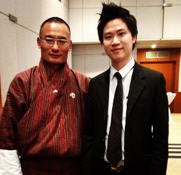 ブータン王国の現首相Tshering Tobgayと
|
 在タイアメリカ国特命全権大使Eric G. Johnと
|
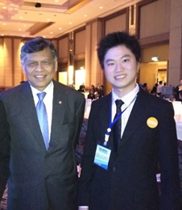 ASEAN・東南アジア諸国連合のスリン事務局長Dr.
Surin PitsuwanとAssociate Professor Dr.
Kerdvibulvech
|
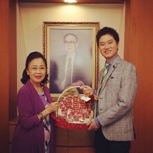 デイリー・ニュース 新聞の編集長Dr. Prapa Hetrakul Srinualnad
|
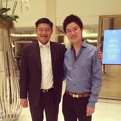 上院副議長 (国民議会) Peerasak Porjit
|
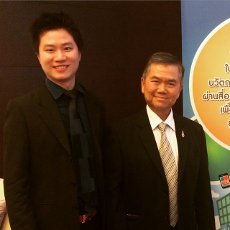 国家改革評議会 Joompol Rodcumdee
|
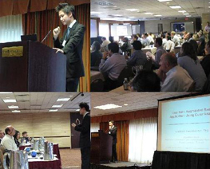 オースティン（アメリカ）のIEEE SSIAI International Conferenceにて
|
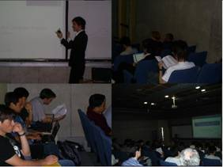 サンティアゴ（チリ）のIEEE PSIVT International Conferenceにて
|
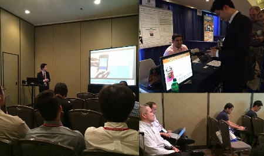 サンディエゴ（アメリカ）のIEEE SMC International
Conferenceにて
|
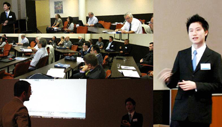 オランダのACM SIMULTECH International
Conferenceにて
|
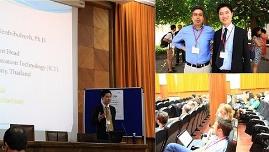 スペインのAMDO (Lecture Notes in Computer Science)にて
|
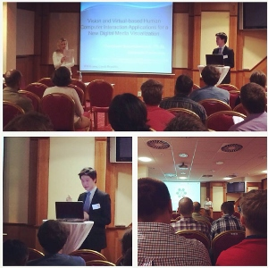 チェコ共和国のWSCG (Scopus)にて
|
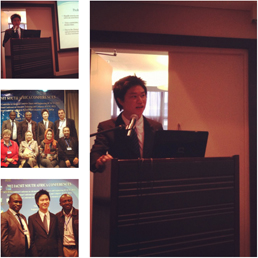 南アフリカの ICETC International
Conferenceにて
|
 ロシアの Springer PRIA International Conferenceにて
|
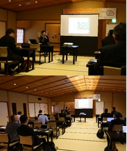 日本の MISNC (Communications in Computer and Information Science) にて
|
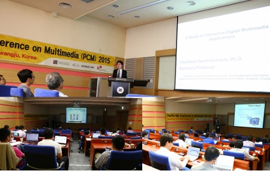 韓国の PCM (Lecture Notes in Computer Science) International
Conferenceにて
|
日本でのAssitant Professor Dr.
Kerdvibulvechと家族
|
中国を訪問
|
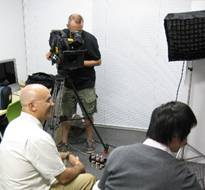 ディスカバリーチャンネルのインタビューにて
|
バンコク サイアム・タワーでプレナリー・スピーカーを行う
|
テレビでインタビュー
|
Global Game Jam 2012でインタビュー
|
 バンコク デュシタニホテルでプレナリー・スピーカーを行う
|
バンコク ラマダ ホテルでプレナリー・スピーカーを行う
|
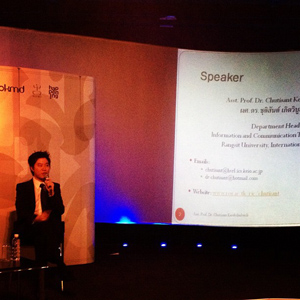 バンコクMuseum
Siamでプレナリー・スピーカーを行う "The
Future of Museums"
|
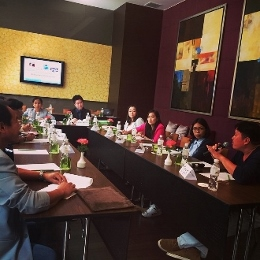 バンコク マリオットでプレナリー・スピーカーを行う "New Media Landscape"
|
HRODのプレナリー・スピーカーを行う "Glooming Innovator"
|
バンコク・アート・アンド・カルチャー・センターでプレナリー・スピーカーを行う
| ก
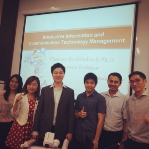
タイ国立開発行政大学院大学で博士の学生と
|
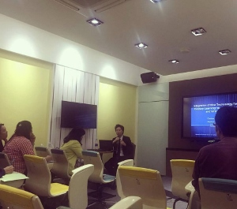 マヒドン大学で博士（国際プログラム）の学生と（Institute for Innovative Learning）
|
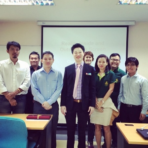 カセートサート大学で博士の学生と（コンピュータ工学）
|
スィーパトゥム大学で大学院生と
|
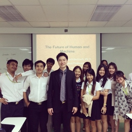 マヒドン大学情報技術・通信学部（国際プログラム）で
|
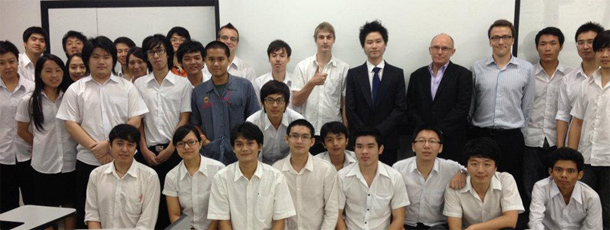 ランシット大学で情報技術・通信学科と
|
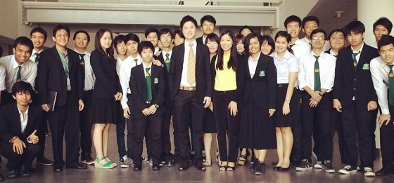 Panyapiwat Institute of Management大学で大学生と
|
工学研究科 、チュラロンコン大学で論文委員
（大学院レベル）
|
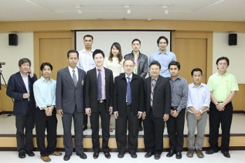 モンクット王トンブリー工科大学でカリキュラム委 員会を行う
|
日本を訪問
|
プレス/メディア
|
|
|
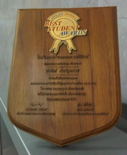 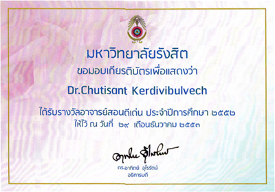 |
|
|

|
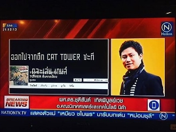 |

|
|
|
.JPG)
|
Click to Listen: Radio Interview on 97.25 FM
|

|

|
|
|
http://www.thaipbsonline.net/program_rerun.asp?id=P0087&NewsID=W0004191
|
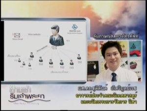 |
|

|
|

|
|
|
パート1:http://www.youtube.com/watch?v=tR2fpdvSP7M
パート2: http://www.youtube.com/watch?v=XkKXUgCgBCk
パート3: http://www.youtube.com/watch?v=kP4zkcg6EAM
フルインタビュー (TPBS): http://www.thaipbsonline.net/program_rerun.asp?id=P0087&NewsID=W0006113
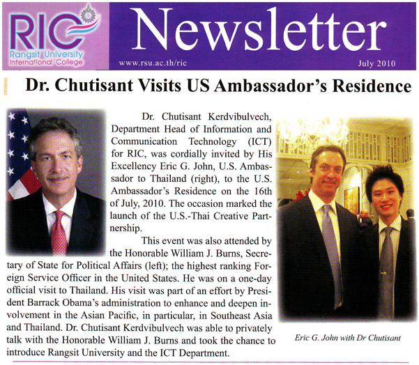 |

|
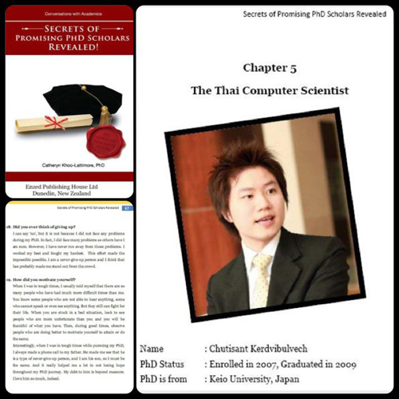
|
Nation TV Channelのニュースアナリスト
|
- IT News Analysis for Nation Channel, หัวข้อ "ผู้ถือหุ้นเฟซบุ๊คฟ้อง โอดถูกหักหลัง" รายการGlobal IT ออกอากาศวันที่ 12 ก.ค. 2555 http://youtu.be/ZBom_s1tqpg
- IT News Analysis for Nation Channel, หัวข้อ "Virtual Reality สู่การทำศัลยกรรม" รายการGlobal
IT ออกอากาศวันที่ 26 ก.ค. 2555
http://www.nationchannel.com/main/programs/like_buri/20120726/27827467/ -
IT News Analysis for Nation Channel, หัวข้อ "อนาคตและทิศทางของ
Blackberry" รายการGlobal IT ออกอากาศวันที่ 2 ส.ค. 2555
http://www.nationchannel.com/main/programs/like_buri/20120803/27827800/ -
IT News Analysis for Nation Channel, หัวข้อ "รัฐบาลจีนกับการสั่งบล็อคเว็บไซต์
Bloomberg" รายการGlobal IT ออกอากาศวันที่ 9 ส.ค. 2555
http://www.nationchannel.com/main/programs/like_buri/20120809/27828151/ -
IT News Analysis for Nation Channel, หัวข้อ "หุ่นยนต์เป่ายิ้งฉุบญี่ปุ่น
ที่ไม่มีทางแพ้มนุษย์" รายการGlobal IT ออกอากาศวันที่
17 ส.ค. 2555
http://www.nationchannel.com/main/programs/like_buri/20120822/27828714/ -
IT News Analysis for Nation Channel, หัวข้อ "เทคโนโลยีแห่งอนาคต
โลกเสมือนผสานโลกจริง" รายการGlobal IT ออกอากาศวันที่
23 ส.ค. 2555
http://www.nationchannel.com/main/programs/like_buri/20120823/27828777/ -
IT News Analysis for Nation Channel, หัวข้อ "Ubuntu แห่งแอฟริกาใต้" รายการGlobal
IT ออกอากาศวันที่ 30 ส.ค. 2555
http://www.youtube.com/watch?v=NGyx2D4iMEA&feature=plcp -
IT News Analysis for Nation Channel, หัวข้อ "Marissa
Mayer CEO ใหม่ของ Yahoo!" รายการGlobal IT ออกอากาศวันที่
6 ก.ย. 2555
http://www.nationchannel.com/main/programs/like_buri/20120907/27829482/ -
IT News Analysis for Nation Channel, หัวข้อ "Marissa
Mayer แห่งแอฟริกา" รายการGlobal IT ออกอากาศวันที่
13 ก.ย. 2555
http://www.nationchannel.com/main/programs/like_buri/20120913/27829780/ -
IT News Analysis for Nation Channel, หัวข้อ "iPhone
5 ที่สิงคโปร์" รายการGlobal IT ออกอากาศวันที่
26 ก.ย. 2555
http://www.nationchannel.com/main/programs/like_buri/20120926/27830458/ -
IT News Analysis for Nation Channel, หัวข้อ "Apple
VS Google" รายการGlobal IT ออกอากาศวันที่
27 ก.ย. 2555
http://www.nationchannel.com/main/programs/like_buri/20120927/27830518/ -
IT News Analysis for Nation Channel, หัวข้อ "Honda:
จาก ASIMO สู่ MIIMO" รายการGlobal IT ออกอากาศวันที่
4 ต.ค. 2555
http://www.nationchannel.com/main/programs/like_buri/20121004/27830846/ -
IT News Analysis for Nation Channel, หัวข้อ "Robot
Vision" รายการGlobal
IT ออกอากาศวันที่ 12 ต.ค. 2555
http://www.youtube.com/watch?v=S5gcfRU8PGo&feature=plcp -
IT News Analysis for Nation Channel, หัวข้อ "จากหนังZambezia
สู่โลกแห่งCG" รายการGlobal
IT ออกอากาศวันที่ 18 ต.ค. 2555
http://www.nationchannel.com/main/programs/like_buri/20121018/27831492/ -
IT News Analysis for Nation Channel, หัวข้อ "ไวรัสคอมพิวเตอร์
Flame แห่งตะวันออกกลาง" รายการGlobal
IT ออกอากาศวันที่ 26 ต.ค. 2555
-
IT News Analysis for Nation Channel, หัวข้อ "โลกมายากล
สู่โลกแห่ง Augmented Reality" รายการGlobal
IT ออกอากาศวันที่ 2 พ.ย. 2555
-
IT News Analysis for Nation Channel, หัวข้อ "GREE
เครือข่ายสังคมออนไลน์ยักษ์ใหญ่จากญี่ปุ่น" รายการGlobal
IT ออกอากาศวันที่ 9 พ.ย. 2555
http://www.nationchannel.com/main/programs/like_buri/20121109/27832525/ -
IT News Analysis for Nation Channel, หัวข้อ "Berners
Lee ผู้คิดค้นและประดิษฐ์ World Wide Web" รายการGlobal
IT ออกอากาศวันที่ 16 พ.ย. 2555
http://www.nationchannel.com/main/programs/like_buri/20121116/27832838/ -
IT News Analysis for Nation Channel, หัวข้อ "สวัสดิการบริษัท
Google" รายการGlobal
IT ออกอากาศวันที่ 23 พ.ย. 2555
http://www.nationchannel.com/main/programs/like_buri/20121123/27833169/ -
IT News Analysis for Nation Channel, หัวข้อ "Microsoft
Surface: แท็บเล็ตตัวแรกจาก Microsoft" รายการGlobal
IT ออกอากาศวันที่ 30 พ.ย. 2555
-
IT News Analysis for Nation Channel, หัวข้อ "จากหนัง
The Matrix สู่ New Viewpoint Synthesis" รายการGlobal
IT ออกอากาศวันที่ 7 ธ.ค. 2555
-
IT News Analysis for Nation Channel, หัวข้อ "Titan
ซูเปอร์คอมพิวเตอร์ที่เร็วสุดในโลก" รายการGlobal
IT ออกอากาศวันที่ 14 ธ.ค. 2555
http://www.nationchannel.com/main/programs/like_buri/20121214/27834119/ -
IT News Analysis for Nation Channel, หัวข้อ "MOOC
ห้องเรียนออนไลน์แบบเปิดสมัยใหม่" รายการGlobal
IT ออกอากาศวันที่ 21 ธ.ค. 2555
-
IT News Analysis for Nation Channel, หัวข้อ "OmniTouch
นวัตกรรมจาก Microsoft Research" รายการGlobal
IT ออกอากาศวันที่ 28 ธ.ค. 2555
RSUテレビのニュースアナリスト
RSUテレビでインタビュー (รายการรู้ทันประเทศไทย)
- รายการรู้ทันประเทศไทย ออกอากาศวันที่ 1 มี.ค. 2555 ทางสถานีโทรทัศน์ช่อง RSU TV หัวข้อ "Mobile Game Development"
www.youtube.com/watch?v=-PFJZraDFwg&feature=youtu.be - รายการรู้ทันประเทศไทย ออกอากาศวันที่ 5 มิ.ย. 2555 ทางสถานีโทรทัศน์ช่อง
RSU TV หัวข้อ "Thailand's Educational
Opportunity and Scholarship"
Part 1: www.youtube.com/watch?v=44JAeziVzP0&feature=youtu.be
Part 2:www.youtube.com/watch?v=ha0mzrIApu0&feature=relmfu - รายการรู้ทันประเทศไทย ออกอากาศวันที่ 7 ส.ค. 2555 ทางสถานีโทรทัศน์ช่อง
RSU TV หัวข้อ "Experience Japan"
Part 1: www.youtube.com/watch?v=o2UP0p-e9LQ&feature=plcp
Part 2: www.youtube.com/watch?v=xvKOvHFqwe4&feature=plcp
Part 3: www.youtube.com/watch?v=pv4XIU970pQ&feature=plcp - รายการรู้ทันประเทศไทย ออกอากาศวันที่ 29 ส.ค. 2555 ทางสถานีโทรทัศน์ช่อง
RSU TV หัวข้อ "Yokohama"
Part 1: www.youtube.com/watch?v=4frYnuXM3EQ&feature=plcp
Part 2: www.youtube.com/watch?v=Vuy9uYKu0so&feature=plcp - รายการรู้ทันประเทศไทย ออกอากาศวันที่ 19 ก.ย. 2555 ทางสถานีโทรทัศน์ช่อง
RSU TV หัวข้อ "The Museum of the Future"
www.youtube.com/watch?v=Shv4WyG12Ug&feature=plcp - รายการรู้ทันประเทศไทย ออกอากาศวันที่ 26 ก.ย. 2555 ทางสถานีโทรทัศน์ช่อง
RSU TV หัวข้อ "IT Career Opportunities"
www.youtube.com/watch?v=JJ-G2yec12c&feature=youtu.be
RSUテレビでインタビュー (รายการมองโลกต่างแดน)
- รายการมองโลกต่างแดน ออกอากาศเวลา 9.00-10.30 น. ทางสถานีโทรทัศน์ช่อง RSU TV หัวข้อ "Samsung vs. Apple, iPhone 5"
Part 1: http://www.youtube.com/watch?v=LuWkvDT_E3Q
Part 2: http://www.youtube.com/watch?v=E1BqqLsIlao
Part 3: http://www.youtube.com/watch?v=42pwA9TmOgQ - รายการมองโลกต่างแดน ออกอากาศเวลา 9.00-10.30 น. ทางสถานีโทรทัศน์ช่อง
RSU TV หัวข้อ "Japan's Economy"
Part 1: http://www.youtube.com/watch?v=FXclR5v1Lq0
Part 2: http://www.youtube.com/watch?v=w63iqHmUzGU
Part 3: http://www.youtube.com/watch?v=es6aT33C9Lo
新聞
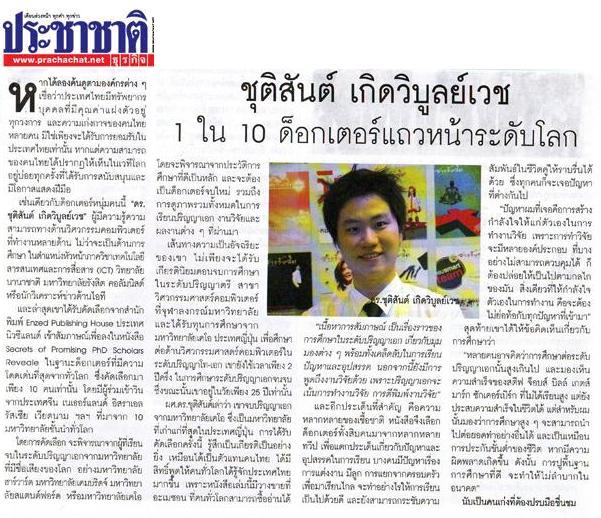


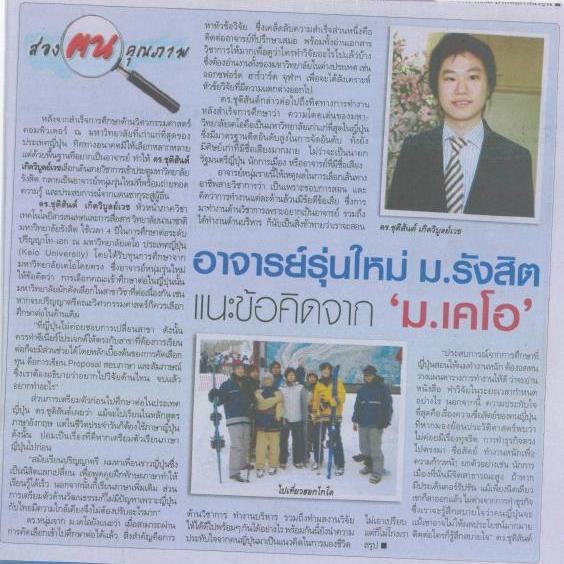


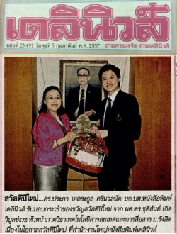
業績一覧
論文誌
- C. Kerdvibulvech, “Geo-Based Mixed Reality Gaming Market Analysis,” Human Behavior and Emerging Technologies, vol. 2022, Article ID 1139475, 9 pages, Wiley (USA) (SCImago Q1, INSPEC, Web of Science, Emerging Sources Citation Index, Pubmed, and Scopus), 2022.
- C. Kerdvibulvech and P. Wanishwattana, “Computational Journalism Analysis on Young Adults' Body Images and Attitudes Toward Plastic Surgery,” International Journal of e-Collaboration (IJeC), Vol. 17, Number 4, Article 8, IGI-Global Publisher (SCImago Q2, INSPEC, DBLP, Web of Science, Web of Science Emerging Sources Citation Index (ESCI), Scopus, and ACM), 2021.
- N. Kaewpanukrangsi and C. Kerdvibulvech, “Gesture-Based Communication via User Experience Design: Integrating Experience into Daily Life for an Arm-Swing Input Device,” Augmented Human Research, Vol. 4, Issue 2, Springer Publisher (Ingenta Connect, EBSCO Discovery Service, ProQuest-ExLibris Primo, ProQuest-ExLibris Summon, OCLC WorldCat Discovery Service, and Google Scholar), April 2019.
- T. Rungvithu and C. Kerdvibulvech, “Conversational Commerce and CryptoCurrency Research in Urban Office Employees in Thailand,” International Journal of e-Collaboration (IJeC), Vol. 15, Number 3, 15 Pages, IGI-Global Publisher (SCImago Q2, INSPEC, DBLP, Web of Science, Web of Science Emerging Sources Citation Index (ESCI), Scopus, and ACM), 2019.
- C. Kerdvibulvech, “Hand Tracking by Extending Distance Transform and Hand Model in Real-time,” Pattern Recognition and Image Analysis, Vol. 25, Issue 3, pp. 437-441, Springer Publisher (INSPEC, SCImago Q3, Elsevier's Scopus, Web of Science, EiCompendex, ACM, and Google Scholar), July 2015.
- C. Kerdvibulvech and K. Yamauchi, “A Novel Method for an Individual Recognition Using 3D Gait Signatures,” International Journal of Advancements in Computing Technology (IJACT), Vol. 6, No. 2, pp. 74-83 (INSPEC, SCImago Q2, EBSCOhost, and Elsevier's Scopus), 2014.
- C. Kerdvibulvech, “A Methodology for Hand and Fingers Motion Analysis Using Adaptive Probabilistic Models,” EURASIP Journal on Embedded Systems (JES), 9 pages, No. 18, Springer Publisher (INSPEC, SCImago Q4, Elsevier's Scopus, SciFinder, EiCompendex, ACM, DBLP, and DOAJ), 2014.
- C. Kerdvibulvech and L. Yin, “A New Online Database System Based on Virtually Digital Mapping,” International Journal of Information Processing and Management (IJIPM), Vol. 5, No. 2, pp. 14-24 (INSPEC, SCImago Q2, EBSCOhost, and Elsevier's Scopus), 2014.
- C. Kerdvibulvech, “Augmented Reality Applications Using Visual Tracking,” KMITL Journal of Information Technology, Vol. 2, 8 pages, July-December 2013.
- C. Kerdvibulvech, “Asiatic Skin Color Segmentation Using an Adaptive Algorithm in Changing Luminance Environment,” Rangsit Journal of Arts and Sciences (RJAS), Vol. 2 No. 1, pp. 33-38, 2012.
- C. Kerdvibulvech, “Markerless Vision-Based Tracking for Interactive Augmented Reality Game,” International Journal of Interactive Worlds (IJIW), Issue on Serious Games and Interactive Worlds, Vol. 2010, Article ID 751615, 14 pages (Academic Search Premier, EBSCO, Ulrich, Airiti Library, CNKI Scholar, and ProQuest), 2010.
- C. Kerdvibulvech and H. Saito, “Model-Based Hand Tracking by Chamfer Distance and Adaptive Color Learning Using Particle Filter,” EURASIP Journal on Image and Video Processing (JIVP), Article ID 724947, 10 pages (Elsevier's Scopus, Academic Search Premier, EiCompendex, INSPEC, SciFinder, Web of Knowledge, SCImago, and DBLP), Springer Publisher, 2009. (ISI Thomson Reuters Impact Factor 0.66)
- C. Kerdvibulvech and H. Saito, “Guitarist Fingertip Tracking by Integrating a Bayesian Classifier into Particle Filters,” Advances in Human-Computer Interaction (AHCI), ISSN 1687-5893, 10 pages (Elsevier's Scopus, INSPEC, SciFinder, SCImago, ACM, EBSCO, and DBLP), 2008. (Acceptance Rate 24%)
- C. Kerdvibulvech and
H. Saito, “Real-Time Guitar Chord Recognition System Using Stereo Cameras
for Supporting Guitarists,” Transactions on Electrical Engineering, Electronics, and Communications (ECTI), Vol. 5, No. 2, pp.
147-157 (Elsevier's Scopus and SCImago), 2007.
国際会議・ブックシリーズ
- C. Kerdvibulvech, “Exploring the Impacts of COVID-19 on Digital and Metaverse Games,” Communications in Computer and Information Science, vol. 1582, (DBLP, SCImago Q4 and Scopus), Springer (Germany), pp. 561–565, 2022.
- C. Kerdvibulvech and T. Palakawong Na Ayuttaya, “A New Metaverse Mobile Application for Boosting Decision Making of Buying Furniture,” Lecture Notes in Networks and Systems, (DBLP, SCImago Q4 and Scopus), Springer (Switzerland), 2022.
- K. Meksumphun and C. Kerdvibulvech, “A New Study of Needs and Motivations Generated by Virtual Reality Games and Factor Products for Generation Z in Bangkok,” Communications in Computer and Information Science, vol. 1589, (DBLP, SCImago Q4 and Scopus), Springer (Germany), pp. 29–42, 2022.
- C. Kerdvibulvech, “Artificial Intelligence on Computer and Communications for Image Analytics,” The IEEE 7th International Conference on Computer and Communications (ICCC), IEEE, Chengdu, China, Dec 10–13, 2021. Invited Speaker
- C. Kerdvibulvech and Z. Y. Dong, “Roles of Artificial Intelligence and Extended Reality Development in the Post-COVID-19 Era,” The 23rd International Conference on Human-Computer Interaction (HCI International'21), Lecture Notes in Computer Science (LNCS), vol. 13095, (DBLP, SCImago Q2 and Scopus), Springer International Publishing, Washington DC, USA, pp. 445-454, July 24–29, 2021. Oral (Full Paper)
- C. Kerdvibulvech, “Recent Multimodal Communication Methodologies in Phonology, Vision, and Touch,” The 22nd International Conference on Human-Computer Interaction (HCI International'20), Lecture Notes in Computer Science (LNCS), Part II, vol. 12182, (DBLP, SCImago Q2 and Scopus), Springer International Publishing, Copenhagen, Denmark, pp. 392-400, July 19–24, 2020. Oral (Full Paper)
- C. Kerdvibulvechand L. L. Chen, “The Power of Augmented Reality and Artificial Intelligence During the Covid-19 Outbreak,” The 22nd International Conference on Human-Computer Interaction (HCI International'20), Lecture Notes in Computer Science (LNCS), vol. 12424, (DBLP, SCImago Q2 and Scopus), Springer International Publishing, Copenhagen, Denmark, pp. 467–476, July 19–24, 2020. Oral (Full Paper)
- C. Kerdvibulvech, “From Augmented Reality through Big Data of Deepfakes,” 2020 5th IEEE International Conference on Big Data Analytics (ICBDA'20), IEEE and Elsevier, Xiamen, China, May 8-11, 2020. Invited Speaker
- C. Kerdvibulvech, “A Review of Augmented Reality-based Human-Computer Interaction Applications of Gesture-based Interaction,” The 21st International Conference on Human-Computer Interaction (HCI International'19), Lecture Notes in Computer Science (LNCS), vol. 11786, (DBLP, SCImago Q2 and Scopus), Springer International Publishing, Orlando, FL, USA, pp. 233-242, July 26-31, 2019. Oral (Full Paper)
- C. Kerdvibulvech and S. Guan, "Affective Computing for Enhancing Affective Touch-based Communication through Extended Reality,” The 19th International Conference on Computational Science and its Applications (ICCSA'19), Workshop on Affective Computing and Emotion Recognition (ACER-EMORE), Lecture Notes in Computer Science (LNCS), vol. 11620, (DBLP, SCImago Q2 and Scopus), Springer International Publishing, Saint Petersburg University, Saint Petersburg, Russia, pp. 351-360, July 1-4, 2019. Oral (Full Paper)
- T. Rungvithu and C. Kerdvibulvech, "A New Study of Conversational Commerce in Thai Urban Office Employees,” The 24th International Conference on Collaboration and Technology (CRIWG'18), Lecture Notes in Computer Science (LNCS), vol. 11001 (DBLP, SCImago Q2 and Scopus), Springer International Publishing, Costa de Caparica (Lisbon), Portugal, pp. 155-168, September 5-7, 2018. Oral (Full Paper)
- C. Kerdvibulvech, "An Innovative Real-time Mobile Augmented Reality Application in Arts,” The 4th International Conference on Augmented Reality, Virtual Reality and Computer Graphics (SALENTO AVR'17), Lecture Notes in Computer Science (LNCS), Part II, vol. 10325 (DBLP, SCImago Q2 and Scopus), Springer International Publishing AG, Ugento (Lecce), Italy, pp. 251-260, June 12-15, 2017. Oral (Full Paper)
- C. Kerdvibulvech, "A Review of Computer-based Gesture Interaction Methods for Supporting Disabled People with Special Needs,” The 15th biennial International Conference on Computers Helping People with Special Needs (ICCHP'16), Lecture Notes in Computer Science (LNCS), part II, vol. 9759 (DBLP, SCImago Q2 and Scopus), Springer International Publishing Switzerland, Linz, Austria, pp. 503-506, July 11-15, 2016. Oral
- C. Kerdvibulvech, "A Novel Integrated System of Visual Communication and Touch Technology for People with Disabilities,” The 16th International Conference on Computational Science and Its Applications (ICCSA'16), Lecture Notes in Computer Science (LNCS), part II, vol. 9787 (DBLP, SCImago Q2 and Scopus), Springer International Publishing Switzerland, Beijing, China, pp. 509-518, 2016, July 3-7, 2016. Oral
- C. Kerdvibulvech and C. Wang, "A New 3D Augmented Reality Application for Educational Games to Help Children in Communication Interactively,” The 16th International Conference on Computational Science and Its Applications (ICCSA'16), Workshop on Virtual Reality and its Applications (VRA), Lecture Notes in Computer Science (LNCS), Part II, vol. 9787 (DBLP, SCImago Q2 and Scopus), Springer International Publishing Switzerland, Beijing, China, pp. 465-473, July 3-7, 2016. Oral
- C. Kerdvibulvech, “A Study of Interactive Digital Multimedia Applications,” The Pacific-Rim Conference on Multimedia (PCM'15), Lecture Notes in Computer Science (LNCS), (DBLP, SCImago Q2, and Scopus), Springer International Publishing Switzerland, Gwangju, Republic of Korea, pp. 192-199, September 16-19, 2015. Oral
- C. Kerdvibulvech, “An Innovative Use of Multidisciplinary Applications Between Information Technology and Socially Digital Media for Connecting People,” The Multidisciplinary International Social Networks Conference 2015 (MISNC'15), Communications in Computer and Information Science (CCIS), vol. 540 (DBLP, SCImago Q3, Scopus, and EiCompendex), Springer-Verlag Berlin Heidelberg, Ehime, Japan, pp. 60-69, September 1-3, 2015. Oral
- C. Kerdvibulvech, “Vision and Virtual-based Human Computer Interaction Applications for a New Digital Media Visualization,” 23rd International Conference on Computer Graphics, Visualization and Computer Vision 2015 (WSCG'15), Eurographics Association & ACM SIGGRAPH (SCImago, Scopus, and Thomson Reuters ISI), Plzen, Czech Republic, pp. 247-254, June 8-12, 2015. Oral
- C. Kerdvibulvech, “Hybrid Model of Human Hand Motion for Cybernetics Application,” IEEE International Conference on Systems, Man, and Cybernetics (SMC’14), San Diego, CA, USA, INSPEC Accession No. 14790169 (IEEE, DBLP, and Scopus), pp. 2367-2372, October 5-8, 2014. Oral
- C. Kerdvibulvech and K. Yamauchi, “Structural Human Shape Analysis for Modeling and Recognition,” Joint IAPR International Workshops on Structural and Syntactic Pattern Recognition (S+SSPR’14), Lecture Notes in Computer Science (LNCS), vol. 8621 (DBLP, SCImago Q2, and Scopus), Springer-Verlag Berlin Heidelberg, Joensuu, Finland, pp. 282–290, August 20-22, 2014.
- C. Kerdvibuvech, “Human Hand Motion Recognition Using an Extended Particle Filter,” 8th International Conference on Articulated Motion and Deformable Objects (AMDO'14), Lecture Notes in Computer Science (LNCS), vol. 8563 (DBLP, SCImago Q2, and Scopus), Springer International Publishing Switzerland, Palma, Mallorca, Spain, pp. 71-80, July 16-18, 2014. Oral
- C. Kerdvibulvech and K. Yamauchi, “3D Human Motion Analysis for Reconstruction and Recognition,” 8th International Conference on Articulated Motion and Deformable Objects (AMDO'14), Lecture Notes in Computer Science (LNCS), vol. 8563 (DBLP, SCImago Q2, and Scopus), Springer International Publishing Switzerland, Palma, Mallorca, Spain, pp. 118-127, July 16-18, 2014. Oral
- C. Kerdvibulvech, “Real-Time Framework of Hand Tracking Based on Distance Transform,” 11th International Conference on Pattern Recognition and Image Analysis (PRIA-11-2013), Samara, Russian Federation (Russian Academy of Sciences, IAPR and Springer), pp. 590-593, September 23-28, 2013. Oral
- C. Kerdvibulvech and N. Ni Win, “The Dentist Online Reservation System Design and Implementation Web Based Application and Database Management System Project,” International Conference on Education Technology and Computer (ICETC'12), Cape Town, South Africa (EBSCO, Google Scholar and ISI Proceedings), August 18-19, 2012. Oral
- C. Kerdvibulvech, “Real-Time Adaptive Learning System Using Object Color Probability for Virtual Reality Applications,” ACM International Conference on Simulation and Modeling Methodologies, Technologies and Applications (ACM SIMULTECH’11), Noordwijkerhout, Netherlands (ISI Thomson Reuters, INSPEC, DBLP and ACM), pp. 200-204, July 29-31, 2011. Oral
- J. Son and C. Kerdvibulvech, “ezPos Library Management Program,” IEEE International Conference on Education Technology and Training (ETT’10), Wuhan, China (IEEE, EiCompendex and ISTP), November 2010. Oral
- C. Kerdvibulvech, “Augmented Reality Applications Broadcast on World’s Popular TV Shows,” Thailand-Japan International Academic Conference (TJIA’10), Nagoya, Japan, November 2010. Oral
- C. Kerdvibulvech, “Real-time Augmented Reality Application Using Color Analysis,” IEEE Southwest Symposium on Image Analysis and Interpretation (IEEE SSIAI’10), Austin, TX, USA (IEEE Computer Society, IEEE, Scopus and SCImago), pp. 29-32, ISBN 978-1-4244-7801-9, May 23-25, 2010. Oral
- C. Kerdvibulvech, “Virtual Reality and Computer Vision for the 21st Century,” Thailand-Japan International Academic Conference (TJIA’09), Kyoto, Japan, November 2009. Oral
- C. Kerdvibulvech, “Computer Vision for Thailand’s Future,” Thailand-Japan International Academic Conference (TJIA’08), Tokyo, Japan, November 2008. Oral
- C. Kerdvibulvech and H. Saito, “Fingering Tracking of Guitar Player in Challenging Illumination Conditions,” International Workshop on Information, Electrical and Electronic Sciences, Nantes, France, October 2008. Oral
- C. Kerdvibulvech and H. Saito, “Markerless Guitarist Fingertip Detection Using a Bayesian Classifier and a Template Matching For Supporting Guitarists,” 10th ACM/IEEE Virtual Reality International Conference (VRIC’08), Laval, France, (IEEE France, ACM, AFRV and ACM SIGGRAPH) pp. 201-208, April 9-13, 2008. Oral
- C. Kerdvibulvech and H. Saito, “Fingertip Detection Using Online Adaptation of Color Probabilities and a Bayesian Classifier,” International Workshop on Electronic & Information Engineering, Xian, China, March 2008. Oral [2nd Best Presenter Award]
- C. Kerdvibulvech and H. Saito, “Vision-Based Guitarist Fingering Tracking Using a Bayesian Classifier and Particle Filters,” IEEE Pacific-Rim Symposium on Image and Video Technology (IEEE PSIVT’07), Lecture Note in Computer Science (LNCS), vol. 4872 (DBLP, Scopus and SCImago), Springer-Verlag Berlin Heidelberg, Santiago, Chile, pp. 625-638, December 17-19, 2007. Oral
- C. Kerdvibulvech and H. Saito, “Vision-Based Detection of Guitar Players’ Fingertips Without Markers,” IEEE International Conference on Computer Graphics, Imaging and Visualization (CGIV’07), (IEEE Computer Society and DBLP) pp. 419-428, August 2007. Oral
- C. Kerdvibulvech and H. Saito, “Real-Time Guitar Chord Estimation By Stereo Cameras For Supporting Guitarists,” 10th International Workshop on Advanced Image Technology (IWAIT’07), Bangkok, Thailand, pp. 147-152, January 2007. Oral
{kind=link}
論文誌・会議（タイ語）
- K. Thongboonmaand and C. Kerdvibulvech, “Challenging Experimential Marketing with Augmented Reality Innovation,” Journal of Business, Economics and Communications (BEC Journal), Vol. 18, Number 3, (TCI 1), 2023.
- กันทลัส ทองบุญมา, ชุติสันต์ เกิดวิบูลย์เวช, “องค์ประกอบสำคัญของการประยุกต์ใช้เทคโนโลยีความเป็นจริงเสริมเพื่อส่งเสริมการตลาดเชิงประสบการณ์,” วารสารนิเทศศาสตร์ (จุฬาลงกรณ์มหาวิทยาลัย) ปีที่ 40 ฉบับที่ 3, (TCI 1), 2565.
- กฤตยา เนตรแก้ว, ชุติสันต์ เกิดวิบูลย์เวช, “การทำการตลาดออนไลน์ของร้านค้าผ่านเฟซบุ๊กที่มีผลต่อพฤติกรรมผู้บริโภค”, การประชุมวิชาการระดับชาติ สังคมความรู้และดิจิทัล (KDS 2016), พฤศจิกายน 2559.
- ชุติสันต์ เกิดวิบูลย์เวช, “นวัตกรรมสื่อดิจิทัลใหม่สำหรับนิเทศศาสตร์”, วารสารนิเทศศาสตร์และนวัตกรรม นิด้า, ปีที่ 2 ฉบับที่ 2 (กรกฎาคม - ธันวาคม 2558) หน้า 55-70.
- ชนิษฐา สกลปิยะวงศ์, ชุติสันต์ เกิดวิบูลย์เวช, “คุณลักษณะและการสร้างบทบาทของยูทูบเบอร์ที่มีชื่อเสียงบนสื่อวิดีโอออนไลน์ยูทูบ กรณีศึกษา เกมแคสเตอร์”, การประชุมงานวิจัยระดับบัณฑิตศึกษาด้านนิเทศศาสตร์ ประจำปี 2558 จุฬาลงกรณ์มหาวิทยาลัย หน้า 363-370, กรกฎาคม 2558.
{kind=link}
ブック
- Media Disruption The Series เพราะ โลก "สื่อ" เปลี่ยน”, ผู้แต่ง : สุชัชวีร์ สุวรรณสวัสดิ์, สิขเรศ ศิรากานต์, ชุติสันต์ เกิดวิบูลย์เวช, มานะ ตรีรยาภิวัฒน์, เอกก์ ภทรธนกุล, สกุลศรี ศรีสารคาม, จัดพิมพ์โดย องค์การกระจายเสียงและแพร่ภาพสาธารณะแห่งประเทศไทย (ส.ส.ท.), พิมพ์ครั้งที่ 1 จำนวน 1000 เล่ม ISBN 978-616-7737-35-5 (กรกฎาคม 2564)
- สื่อดิจิทัลใหม่..สื่อแห่งอนาคต, ผู้แต่ง : ชุติสันต์ เกิดวิบูลย์เวช, สำนักพิมพ์ สถาบันบัณฑิตพัฒนบริหารศาสตร์, วางจำหน่ายที่ ศูนย์หนังสือจุฬาฯ และ ซีเอ็ดบุ๊คเซ็นเตอร์, พิมพ์ครั้งที่ 2 (ฉบับปรับปรุง) จำนวน 500 เล่ม พิมพ์ที่โรงพิมพ์แห่งจุฬาลงกรณ์มหาวิทยาลัย, ISBN 978-974-2319-40-3, 260 หน้า (สิงหาคม 2560) / พิมพ์ครั้งที่ 1 จำนวน 500 เล่ม ISBN 978-974-2319-12-0, 226 หน้า (สิงหาคม 2559)
- Augmented Reality: A Modern Vision-Based Approach, Author: Chutisant Kerdvibulvech, Publish by: Rangsit University Publishing, Printed in: Thailand by S Charoen Printing Co., Ltd, ISBN 978-616-7687-21-6, 2nd Edition (2016) and 1st Edition (2014)
雑誌・新聞
- “โลกเสมือนผสานโลกจริง” โดย ดร.ชุติสันต์ เกิดวิบูลย์เวช ในคอลัมน์ iTech 360° นิตยสารผู้จัดการ 360 องศา ตุลาคม 2554.
- “การจากไปของ Steve Jobs” โดย ดร.ชุติสันต์ เกิดวิบูลย์เวช ในคอลัมน์ iTech 360° นิตยสารผู้จัดการ 360 องศา พฤศจิกายน 2554.
- “จากตามนุษย์สู่สมองคอมพิวเตอร์” โดย ดร.ชุติสันต์ เกิดวิบูลย์เวช ในคอลัมน์ iTech 360° นิตยสารผู้จัดการ 360 องศา ธันวาคม 2554.
- “Diminished Reality กับมนุษย์ล่องหนในอนาคต” โดย ดร.ชุติสันต์ เกิดวิบูลย์เวช ในคอลัมน์ iTech 360° นิตยสารผู้จัดการ 360 องศา มกราคม 2555.
- “ส่งเสียงคุยกับสาวสวยนามว่า Siri” โดย ดร.ชุติสันต์ เกิดวิบูลย์เวช ในคอลัมน์ iTech 360° นิตยสารผู้จัดการ 360 องศา กุมภาพันธ์ 2555.
- “Global Game Jam สร้างสรรค์เกมไทย ก้าวไกลเศรษฐกิจโลก” โดย ดร.ชุติสันต์ เกิดวิบูลย์เวช ในคอลัมน์ iTech 360° นิตยสารผู้จัดการ 360 องศา มีนาคม 2555.
- “2G จากอดีต มาสู่ 3G ปัจจุบัน ก้าวเข้าสู่ 4G แห่งอนาคต” โดย ดร.ชุติสันต์ เกิดวิบูลย์เวช ในคอลัมน์ iTech 360° นิตยสารผู้จัดการ 360 องศา เมษายน 2555.
- “จาก Facebook มาสู่ GREE สร้างอภิมหาเศรษฐีที่อายุน้อยที่สุดในโลก” โดย ดร.ชุติสันต์ เกิดวิบูลย์เวช ในคอลัมน์ iTech 360° นิตยสารผู้จัดการ 360 องศา พฤษภาคม 2555.
- “เทคโนโลยีแห่งอนาคตโปรเจ็กเตอร์พกพาอัจฉริยะ” โดย ดร.ชุติสันต์ เกิดวิบูลย์เวช ในคอลัมน์ iTech 360° นิตยสารผู้จัดการ 360 องศา มิถุนายน 2555.
- “งานวิจัยโลกเสมือนผสานโลกจริง โลกแห่ง Augmented Reality” โดย ผศ.ดร.ชุติสันต์ เกิดวิบูลย์เวช ในคอลัมน์ iTech 360° นิตยสารผู้จัดการ 360 องศา กรกฎาคม 2555.
- “อะไรคือเทคโนโลยี Cloud Computing” โดย ผศ.ดร.ชุติสันต์ เกิดวิบูลย์เวช ในคอลัมน์ iTech 360° นิตยสารผู้จัดการ 360 องศา สิงหาคม 2555.
- “จากโลกแห่ง Augmented Reality สู่โลกแห่ง E-Commerce” โดย ผศ.ดร.ชุติสันต์ เกิดวิบูลย์เวช ในคอลัมน์ Marketing นิตยสาร e-commerce ฉบับ 165 ประจำเดือนกันยายน 2555.
- "จากไมโครซอฟท์วินโดว์สมาสู่อูบุนตูแห่งแอฟริกาใต้" โดย ผศ.ดร.ชุติสันต์ เกิดวิบูลย์เวช ในคอลัมน์ รอบรู้ไอที รอบโลกเทคโนโลยี (หนังสือพิมพ์เดลินิวส์) ประจำวันพุธที่ 31 กรกฎาคม 2556.
- "MOOC ห้องเรียนออนไลน์แห่งศตวรรษที่ 21" โดย ผศ.ดร.ชุติสันต์ เกิดวิบูลย์เวช ในคอลัมน์ รอบรู้ไอที รอบโลกเทคโนโลยี (หนังสือพิมพ์เดลินิวส์) ประจำวันพุธที่ 7 สิงหาคม 2556.
- "จาก Facebook ของอเมริกา มาสู่ Vkontakte แห่งรัสเซีย" โดย ผศ.ดร.ชุติสันต์ เกิดวิบูลย์เวช ในคอลัมน์ รอบรู้ไอที รอบโลกเทคโนโลยี (หนังสือพิมพ์เดลินิวส์) ประจำวันพุธที่ 14 สิงหาคม 2556.
- "เทคโนโลยีกับการแปลภาษาแห่งศตวรรษที่ 21" โดย ผศ.ดร.ชุติสันต์ เกิดวิบูลย์เวช ในคอลัมน์ รอบรู้ไอที รอบโลกเทคโนโลยี (หนังสือพิมพ์เดลินิวส์) ประจำวันพุธที่ 21 สิงหาคม 2556.
- "ระวัง...ทีวีของคุณอาจกำลังมองคุณอยู่" โดย ผศ.ดร.ชุติสันต์ เกิดวิบูลย์เวช ในคอลัมน์ รอบรู้ไอที รอบโลกเทคโนโลยี (หนังสือพิมพ์เดลินิวส์) ประจำวันพุธที่ 28 สิงหาคม 2556.
- "Made in Space มีจริงหรือ!" โดย ผศ.ดร.ชุติสันต์ เกิดวิบูลย์เวช ในคอลัมน์ รอบรู้ไอที รอบโลกเทคโนโลยี (หนังสือพิมพ์เดลินิวส์) ประจำวันพุธที่ 4 กันยายน 2556.
- "จำนวนคนตาม Instagram ซื้อได้จริงหรือ?" โดย ผศ.ดร.ชุติสันต์ เกิดวิบูลย์เวช ในคอลัมน์ รอบรู้ไอที รอบโลกเทคโนโลยี (หนังสือพิมพ์เดลินิวส์) ประจำวันพุธที่ 11 กันยายน 2556.
- "Smart Watch นาฬิกาแห่งอนาคต" โดย ผศ.ดร.ชุติสันต์ เกิดวิบูลย์เวช ในคอลัมน์ รอบรู้ไอที รอบโลกเทคโนโลยี (หนังสือพิมพ์เดลินิวส์) ประจำวันพุธที่ 18 กันยายน 2556.
- "มือถือ 64 บิต ครั้งแรกของโลก" โดย ผศ.ดร.ชุติสันต์ เกิดวิบูลย์เวช ในคอลัมน์ รอบรู้ไอที รอบโลกเทคโนโลยี (หนังสือพิมพ์เดลินิวส์) ประจำวันพุธที่ 25 กันยายน 2556.
- "เทคโนโลยียุคใหม่ : เห็นได้ ฟังได้ สัมผัสได้" โดย ผศ.ดร.ชุติสันต์ เกิดวิบูลย์เวช ในคอลัมน์ รอบรู้ไอที รอบโลกเทคโนโลยี (หนังสือพิมพ์เดลินิวส์) ประจำวันพุธที่ 2 ตุลาคม 2556.
- "เทคโนโลยีระบุเพศมนุษย์" โดย ผศ.ดร.ชุติสันต์ เกิดวิบูลย์เวช ในคอลัมน์ รอบรู้ไอที รอบโลกเทคโนโลยี (หนังสือพิมพ์เดลินิวส์) ประจำวันพุธที่ 9 ตุลาคม 2556.
- "แมลงสาบคอนโทรลเลอร์" โดย ผศ.ดร.ชุติสันต์ เกิดวิบูลย์เวช ในคอลัมน์ รอบรู้ไอที รอบโลกเทคโนโลยี (หนังสือพิมพ์เดลินิวส์) ประจำวันพุธที่ 16 ตุลาคม 2556.
- "จากเจ้าพ่อไอทีแห่งรัสเซีย สู่นักเจาะข้อมูลแห่งอเมริกา" โดย ผศ.ดร.ชุติสันต์ เกิดวิบูลย์เวช ในคอลัมน์ รอบรู้ไอที รอบโลกเทคโนโลยี (หนังสือพิมพ์เดลินิวส์) ประจำวันพุธที่ 23 ตุลาคม 2556.
- "สาวสวยเจ้าของเสียง สิริ" โดย ผศ.ดร.ชุติสันต์ เกิดวิบูลย์เวช ในคอลัมน์ รอบรู้ไอที รอบโลกเทคโนโลยี (หนังสือพิมพ์เดลินิวส์) ประจำวันพุธที่ 30 ตุลาคม 2556.
- "แว่นอัจฉริยะกูเกิล" โดย ผศ.ดร.ชุติสันต์ เกิดวิบูลย์เวช ในคอลัมน์ รอบรู้ไอที รอบโลกเทคโนโลยี (หนังสือพิมพ์เดลินิวส์) ประจำวันพุธที่ 6 พฤศจิกายน 2556.
- "iCar ความฝันของสตีฟ จ็อบส์" โดย ผศ.ดร.ชุติสันต์ เกิดวิบูลย์เวช ในคอลัมน์ รอบรู้ไอที รอบโลกเทคโนโลยี (หนังสือพิมพ์เดลินิวส์) ประจำวันพุธที่ 13 พฤศจิกายน 2556.
- "แอปเปิลและซัมซุง คู่ปรับร้อนแรง" โดย ผศ.ดร.ชุติสันต์ เกิดวิบูลย์เวช ในคอลัมน์ รอบรู้ไอที รอบโลกเทคโนโลยี (หนังสือพิมพ์เดลินิวส์) ประจำวันพุธที่ 20 พฤศจิกายน 2556.
- "แว่นวิเศษกันคนแอบดูหน้าจอ" โดย ผศ.ดร.ชุติสันต์ เกิดวิบูลย์เวช ในคอลัมน์ รอบรู้ไอที รอบโลกเทคโนโลยี (หนังสือพิมพ์เดลินิวส์) ประจำวันพุธที่ 27 พฤศจิกายน 2556.
- "คลายร้อนกับสายรัดข้อมือแห่งอนาคต" โดย ผศ.ดร.ชุติสันต์ เกิดวิบูลย์เวช ในคอลัมน์ รอบรู้ไอที รอบโลกเทคโนโลยี (หนังสือพิมพ์เดลินิวส์) ประจำวันพุธที่ 4 ธันวาคม 2556.
- "การตลาดเชิงเทคโนโลยีแห่งอนาคต" โดย ผศ.ดร.ชุติสันต์ เกิดวิบูลย์เวช ในคอลัมน์ รอบรู้ไอที รอบโลกเทคโนโลยี (หนังสือพิมพ์เดลินิวส์) ประจำวันพุธที่ 11 ธันวาคม 2556.
- "ไวรัสยืดอายุแบต" โดย ผศ.ดร.ชุติสันต์ เกิดวิบูลย์เวช ในคอลัมน์ รอบรู้ไอที รอบโลกเทคโนโลยี (หนังสือพิมพ์เดลินิวส์) ประจำวันพุธที่ 18 ธันวาคม 2556.
- "ถุงยางมือถือ" โดย ผศ.ดร.ชุติสันต์ เกิดวิบูลย์เวช ในคอลัมน์ รอบรู้ไอที รอบโลกเทคโนโลยี (หนังสือพิมพ์เดลินิวส์) ประจำวันพุธที่ 25 ธันวาคม 2556.
- "ปีใหม่ เทคโนโลยีอะไรจะมาใหม่" โดย ผศ.ดร.ชุติสันต์ เกิดวิบูลย์เวช ในคอลัมน์ รอบรู้ไอที รอบโลกเทคโนโลยี (หนังสือพิมพ์เดลินิวส์) ประจำวันพุธที่ 1 มกราคม 2557.
- "รถยนต์ไร้คนขับ" โดย ผศ.ดร.ชุติสันต์ เกิดวิบูลย์เวช ในคอลัมน์ รอบรู้ไอที รอบโลกเทคโนโลยี (หนังสือพิมพ์เดลินิวส์) ประจำวันพุธที่ 8 มกราคม 2557.
- "ของลอยได้ ผีหรือวิทยาศาสตร์?" โดย ผศ.ดร.ชุติสันต์ เกิดวิบูลย์เวช ในคอลัมน์ รอบรู้ไอที รอบโลกเทคโนโลยี (หนังสือพิมพ์เดลินิวส์) ประจำวันพุธที่ 15 มกราคม 2557.
- "เมื่อจบยุคสารสนเทศ อะไรจะมาต่อ" โดย ผศ.ดร.ชุติสันต์ เกิดวิบูลย์เวช ในคอลัมน์ รอบรู้ไอที รอบโลกเทคโนโลยี (หนังสือพิมพ์เดลินิวส์) ประจำวันพุธที่ 22 มกราคม 2557.
- "เพื่อนในเฟซบุ๊ก สู่สังคมแห่งมิตรภาพ" โดย ผศ.ดร.ชุติสันต์ เกิดวิบูลย์เวช ในคอลัมน์ รอบรู้ไอที รอบโลกเทคโนโลยี (หนังสือพิมพ์เดลินิวส์) ประจำวันพุธที่ 29 มกราคม 2557.
- "นินจาวิ่งบนน้ำ" โดย ผศ.ดร.ชุติสันต์ เกิดวิบูลย์เวช ในคอลัมน์ รอบรู้ไอที รอบโลกเทคโนโลยี (หนังสือพิมพ์เดลินิวส์) ประจำวันพุธที่ 5 กุมภาพันธ์ 2557.
- "ไวรอลของรมต.ที่แข็งแกร่งที่สุดในปฐพี" โดย ผศ.ดร.ชุติสันต์ เกิดวิบูลย์เวช ในคอลัมน์ รอบรู้ไอที รอบโลกเทคโนโลยี (หนังสือพิมพ์เดลินิวส์) ประจำวันพุธที่ 12 กุมภาพันธ์ 2557.
- "โลกดิจิทัลยุคใหม่ไร้หน้าจอจำกัด" โดย ผศ.ดร.ชุติสันต์ เกิดวิบูลย์เวช ในคอลัมน์ รอบรู้ไอที รอบโลกเทคโนโลยี (หนังสือพิมพ์เดลินิวส์) ประจำวันพุธที่ 19 กุมภาพันธ์ 2557.
- "จาก 4G สู่ 5G" โดย ผศ.ดร.ชุติสันต์ เกิดวิบูลย์เวช ในคอลัมน์ รอบรู้ไอที รอบโลกเทคโนโลยี (หนังสือพิมพ์เดลินิวส์) ประจำวันพุธที่ 26 กุมภาพันธ์ 2557.
- "เล่น (เกม) นอกกรอบ" โดย ผศ.ดร.ชุติสันต์ เกิดวิบูลย์เวช ในคอลัมน์ รอบรู้ไอที รอบโลกเทคโนโลยี (หนังสือพิมพ์เดลินิวส์) ประจำวันพุธที่ 5 มีนาคม 2557.
- "คิดแบบมาร์ก ซักเคอร์เบิร์ก" โดย ผศ.ดร.ชุติสันต์ เกิดวิบูลย์เวช ในคอลัมน์ รอบรู้ไอที รอบโลกเทคโนโลยี (หนังสือพิมพ์เดลินิวส์) ประจำวันพุธที่ 12 มีนาคม 2557.
- "สมการที่สุดแห่งศตวรรษ?" โดย ผศ.ดร.ชุติสันต์ เกิดวิบูลย์เวช ในคอลัมน์ รอบรู้ไอที รอบโลกเทคโนโลยี (หนังสือพิมพ์เดลินิวส์) ประจำวันพุธที่ 19 มีนาคม 2557.
- "โบอิ้งกับมือถือ 007" โดย ผศ.ดร.ชุติสันต์ เกิดวิบูลย์เวช ในคอลัมน์ รอบรู้ไอที รอบโลกเทคโนโลยี (หนังสือพิมพ์เดลินิวส์) ประจำวันพุธที่ 26 มีนาคม 2557.
- "คำทำนายอนาคตสุดฮา" โดย ผศ.ดร.ชุติสันต์ เกิดวิบูลย์เวช ในคอลัมน์ รอบรู้ไอที รอบโลกเทคโนโลยี (หนังสือพิมพ์เดลินิวส์) ประจำวันพุธที่ 2 เมษายน 2557.
- "งานสืบราชการลับบนเฟซบุ๊ก" โดย ผศ.ดร.ชุติสันต์ เกิดวิบูลย์เวช ในคอลัมน์ รอบรู้ไอที รอบโลกเทคโนโลยี (หนังสือพิมพ์เดลินิวส์) ประจำวันพุธที่ 9 เมษายน 2557.
- "หรือแอนดรอยด์จะครองโลกในอนาคต?" โดย ผศ.ดร.ชุติสันต์ เกิดวิบูลย์เวช ในคอลัมน์ รอบรู้ไอที รอบโลกเทคโนโลยี (หนังสือพิมพ์เดลินิวส์) ประจำวันพุธที่ 16 เมษายน 2557.
- "ตรวจเลือดผ่านมือถือ" โดย ผศ.ดร.ชุติสันต์ เกิดวิบูลย์เวช ในคอลัมน์ รอบรู้ไอที รอบโลกเทคโนโลยี (หนังสือพิมพ์เดลินิวส์) ประจำวันพุธที่ 23 เมษายน 2557.
- "จริงหรือ! กูเกิลไม่ชอบคนเรียนเก่ง" โดย ผศ.ดร.ชุติสันต์ เกิดวิบูลย์เวช ในคอลัมน์ รอบรู้ไอที รอบโลกเทคโนโลยี (หนังสือพิมพ์เดลินิวส์) ประจำวันพุธที่ 30 เมษายน 2557.
- "เครื่องพิมพ์ชุดชั้นในเกล็ดหิมะ 3 มิติ" โดย ผศ.ดร.ชุติสันต์ เกิดวิบูลย์เวช ในคอลัมน์ รอบรู้ไอที รอบโลกเทคโนโลยี (หนังสือพิมพ์เดลินิวส์) ประจำวันพุธที่ 7 พฤษภาคม 2557.
- "สื่อสารทางไกล (โฮโลแกรม) แบบสตาร์วอร์ส" โดย ผศ.ดร.ชุติสันต์ เกิดวิบูลย์เวช ในคอลัมน์ รอบรู้ไอที รอบโลกเทคโนโลยี (หนังสือพิมพ์เดลินิวส์) ประจำวันพุธที่ 14 พฤษภาคม 2557.
- "บริการอินเทอร์เน็ตฟรีผ่านบอลลูน" โดย ผศ.ดร.ชุติสันต์ เกิดวิบูลย์เวช ในคอลัมน์ รอบรู้ไอที รอบโลกเทคโนโลยี (หนังสือพิมพ์เดลินิวส์) ประจำวันพุธที่ 21 พฤษภาคม 2557.
- "เศรษฐกิจสร้างสรรค์กับ LINE" โดย ผศ.ดร.ชุติสันต์ เกิดวิบูลย์เวช ในคอลัมน์ รอบรู้ไอที รอบโลกเทคโนโลยี (หนังสือพิมพ์เดลินิวส์) ประจำวันพุธที่ 28 พฤษภาคม 2557.
- "หุ่น (ยนต์) ไทยสู่สนามญี่ปุ่น" โดย ผศ.ดร.ชุติสันต์ เกิดวิบูลย์เวช ในคอลัมน์ รอบรู้ไอที รอบโลกเทคโนโลยี (หนังสือพิมพ์เดลินิวส์) ประจำวันพุธที่ 4 มิถุนายน 2557.
- "โทรศัพท์เลโก้" โดย ผศ.ดร.ชุติสันต์ เกิดวิบูลย์เวช ในคอลัมน์ รอบรู้ไอที รอบโลกเทคโนโลยี (หนังสือพิมพ์เดลินิวส์) ประจำวันพุธที่ 11 มิถุนายน 2557.
- "อินเทอร์เน็ตดิจิตอลเกตเวย์แห่งชาติ ทางออกหรือทางตัน?" โดย ผศ.ดร.ชุติสันต์ เกิดวิบูลย์เวช ในคอลัมน์ รอบรู้ไอที รอบโลกเทคโนโลยี (หนังสือพิมพ์เดลินิวส์) ประจำวันพุธที่ 18 มิถุนายน 2557.
- "เสื้อกู้อัคคีภัยแห่งอนาคต" โดย ผศ.ดร.ชุติสันต์ เกิดวิบูลย์เวช ในคอลัมน์ รอบรู้ไอที รอบโลกเทคโนโลยี (หนังสือพิมพ์เดลินิวส์) ประจำวันพุธที่ 25 มิถุนายน 2557.
- "สังคมก้มหน้ากับสมาร์ทโฟน" โดย ผศ.ดร.ชุติสันต์ เกิดวิบูลย์เวช ในคอลัมน์ รอบรู้ไอที รอบโลกเทคโนโลยี (หนังสือพิมพ์เดลินิวส์) ประจำวันพุธที่ 2 กรกฎาคม 2557.
- "กูเกิลกับแทงโก้" โดย ผศ.ดร.ชุติสันต์ เกิดวิบูลย์เวช ในคอลัมน์ รอบรู้ไอที รอบโลกเทคโนโลยี (หนังสือพิมพ์เดลินิวส์) ประจำวันพุธที่ 9 กรกฎาคม 2557.
- "นักสืบออนไลน์ และอาชญากรรมในกระทู้" โดย ผศ.ดร.ชุติสันต์ เกิดวิบูลย์เวช ในคอลัมน์ รอบรู้ไอที รอบโลกเทคโนโลยี (หนังสือพิมพ์เดลินิวส์) ประจำวันพุธที่ 16 กรกฎาคม 2557.
- "แว่นตาสามมิติกับเกมบนเฟซบุ๊ก" โดย ผศ.ดร.ชุติสันต์ เกิดวิบูลย์เวช ในคอลัมน์ รอบรู้ไอที รอบโลกเทคโนโลยี (หนังสือพิมพ์เดลินิวส์) ประจำวันพุธที่ 23 กรกฎาคม 2557.
- "ปลอกแขนอัจฉริยะ MYO" โดย ผศ.ดร.ชุติสันต์ เกิดวิบูลย์เวช ในคอลัมน์ รอบรู้ไอที รอบโลกเทคโนโลยี (หนังสือพิมพ์เดลินิวส์) ประจำวันพุธที่ 30 กรกฎาคม 2557.
- "เครื่องพิมพ์อวัยวะเทียม 3 มิติ" โดย ผศ.ดร.ชุติสันต์ เกิดวิบูลย์เวช ในคอลัมน์ รอบรู้ไอที รอบโลกเทคโนโลยี (หนังสือพิมพ์เดลินิวส์) ประจำวันพุธที่ 6 สิงหาคม 2557.
- "เทคโนโลยีจอภาพ จากอดีตสู่อนาคต" โดย ผศ.ดร.ชุติสันต์ เกิดวิบูลย์เวช ในคอลัมน์ รอบรู้ไอที รอบโลกเทคโนโลยี (หนังสือพิมพ์เดลินิวส์) ประจำวันพุธที่ 13 สิงหาคม 2557.
- "จากไอโฟนแห่งแอปเปิ้ล สู่ไฟร์โฟนแห่งอเมซอน" โดย ผศ.ดร.ชุติสันต์ เกิดวิบูลย์เวช ในคอลัมน์ รอบรู้ไอที รอบโลกเทคโนโลยี (หนังสือพิมพ์เดลินิวส์) ประจำวันพุธที่ 20 สิงหาคม 2557.
- "เม็ดยาส่งต่อความรู้" โดย ผศ.ดร.ชุติสันต์ เกิดวิบูลย์เวช ในคอลัมน์ รอบรู้ไอที รอบโลกเทคโนโลยี (หนังสือพิมพ์เดลินิวส์) ประจำวันพุธที่ 27 สิงหาคม 2557.
- "รู้นะว่ามองอะไรอยู่" โดย ผศ.ดร.ชุติสันต์ เกิดวิบูลย์เวช ในคอลัมน์ รอบรู้ไอที รอบโลกเทคโนโลยี (หนังสือพิมพ์เดลินิวส์) ประจำวันพุธที่ 3 กันยายน 2557.
- "ห้างสรรพสินค้าเสมือนจริงแห่งแรกของโลก" โดย ผศ.ดร.ชุติสันต์ เกิดวิบูลย์เวช ในคอลัมน์ รอบรู้ไอที รอบโลกเทคโนโลยี (หนังสือพิมพ์เดลินิวส์) ประจำวันพุธที่ 10 กันยายน 2557.
- "อภิมหาเศรษฐีแห่งแดนมังกร" โดย ผศ.ดร.ชุติสันต์ เกิดวิบูลย์เวช ในคอลัมน์ รอบรู้ไอที รอบโลกเทคโนโลยี (หนังสือพิมพ์เดลินิวส์) ประจำวันพุธที่ 17 กันยายน 2557.
- "อเมซอนแห่งสหรัฐ ปะทะ อาลีบาบาแห่งจีน" โดย ผศ.ดร.ชุติสันต์ เกิดวิบูลย์เวช ในคอลัมน์ รอบรู้ไอที รอบโลกเทคโนโลยี (หนังสือพิมพ์เดลินิวส์) ประจำวันพุธที่ 24 กันยายน 2557.
- "เศรษฐกิจดิจิตอลสร้างสรรค์" โดย ผศ.ดร.ชุติสันต์ เกิดวิบูลย์เวช ในคอลัมน์ รอบรู้ไอที รอบโลกเทคโนโลยี (หนังสือพิมพ์เดลินิวส์) ประจำวันพุธที่ 1 ตุลาคม 2557.
- "ปิดหูปิดตากูเกิล" โดย ผศ.ดร.ชุติสันต์ เกิดวิบูลย์เวช ในคอลัมน์ รอบรู้ไอที รอบโลกเทคโนโลยี (หนังสือพิมพ์เดลินิวส์) ประจำวันพุธที่ 8 ตุลาคม 2557.
- "เฟซบุ๊กภิวัฒน์" โดย ผศ.ดร.ชุติสันต์ เกิดวิบูลย์เวช ในคอลัมน์ รอบรู้ไอที รอบโลกเทคโนโลยี (หนังสือพิมพ์เดลินิวส์) ประจำวันพุธที่ 15 ตุลาคม 2557.
- "ภาษีนวัตกรรม" โดย ผศ.ดร.ชุติสันต์ เกิดวิบูลย์เวช ในคอลัมน์ รอบรู้ไอที รอบโลกเทคโนโลยี (หนังสือพิมพ์เดลินิวส์) ประจำวันพุธที่ 22 ตุลาคม 2557.
- "ซื้อคล่อง ขายง่าย กับไลน์ช้อป" โดย ผศ.ดร.ชุติสันต์ เกิดวิบูลย์เวช ในคอลัมน์ รอบรู้ไอที รอบโลกเทคโนโลยี (หนังสือพิมพ์เดลินิวส์) ประจำวันพุธที่ 29 ตุลาคม 2557.
- "เมื่อมือถือ กลายมาเป็นบัตรเครดิต" โดย ผศ.ดร.ชุติสันต์ เกิดวิบูลย์เวช ในคอลัมน์ รอบรู้ไอที รอบโลกเทคโนโลยี (หนังสือพิมพ์เดลินิวส์) ประจำวันพุธที่ 5 พฤศจิกายน 2557.
- "เฟซบุ๊ก-อาลีบาบา-แอปเปิล โคจรมาเจอกันที่จีน" โดย ผศ.ดร.ชุติสันต์ เกิดวิบูลย์เวช ในคอลัมน์ รอบรู้ไอที รอบโลกเทคโนโลยี (หนังสือพิมพ์เดลินิวส์) ประจำวันพุธที่ 12 พฤศจิกายน 2557.
- "แจ็ค หม่า-มาร์ก ซัคเคอร์เบิร์ก ความเหมือนที่แตกต่าง" โดย ผศ.ดร.ชุติสันต์ เกิดวิบูลย์เวช ในคอลัมน์ รอบรู้ไอที รอบโลกเทคโนโลยี (หนังสือพิมพ์เดลินิวส์) ประจำวันพุธที่ 19 พฤศจิกายน 2557.
- "แอพจับของก๊อปแบรนด์เนม" โดย ผศ.ดร.ชุติสันต์ เกิดวิบูลย์เวช ในคอลัมน์ รอบรู้ไอที รอบโลกเทคโนโลยี (หนังสือพิมพ์เดลินิวส์) ประจำวันพุธที่ 26 พฤศจิกายน 2557.
- "นักล่าวัตถุดิบแห่งโลกอนาคต" โดย ผศ.ดร.ชุติสันต์ เกิดวิบูลย์เวช ในคอลัมน์ รอบรู้ไอที รอบโลกเทคโนโลยี (หนังสือพิมพ์เดลินิวส์) ประจำวันพุธที่ 3 ธันวาคม 2557.
- "นาฬิกาแสงเลเซอร์" โดย ผศ.ดร.ชุติสันต์ เกิดวิบูลย์เวช ในคอลัมน์ รอบรู้ไอที รอบโลกเทคโนโลยี (หนังสือพิมพ์เดลินิวส์) ประจำวันพุธที่ 10 ธันวาคม 2557.
- "กระทรวงดิจิตอลเพื่อเศรษฐกิจและสังคม" โดย ผศ.ดร.ชุติสันต์ เกิดวิบูลย์เวช ในคอลัมน์ รอบรู้ไอที รอบโลกเทคโนโลยี (หนังสือพิมพ์เดลินิวส์) ประจำวันพุธที่ 17 ธันวาคม 2557.
- "นาฬิกาอัจฉริยะเปลี่ยนรูปแบบได้เอง" โดย ผศ.ดร.ชุติสันต์ เกิดวิบูลย์เวช ในคอลัมน์ รอบรู้ไอที รอบโลกเทคโนโลยี (หนังสือพิมพ์เดลินิวส์) ประจำวันพุธที่ 24 ธันวาคม 2557.
- "ทำไมของออนไลน์ถูกกว่าท้องตลาดมาก (1)" โดย ผศ.ดร.ชุติสันต์ เกิดวิบูลย์เวช ในคอลัมน์ รอบรู้ไอที รอบโลกเทคโนโลยี (หนังสือพิมพ์เดลินิวส์) ประจำวันพุธที่ 31 ธันวาคม 2557.
- "ทำไมของออนไลน์ถูกกว่าท้องตลาดมาก (2)" โดย ผศ.ดร.ชุติสันต์ เกิดวิบูลย์เวช ในคอลัมน์ รอบรู้ไอที รอบโลกเทคโนโลยี (หนังสือพิมพ์เดลินิวส์) ประจำวันพุธที่ 7 มกราคม 2558.
- "ทำไมของออนไลน์ถูกกว่าท้องตลาดมาก (3)" โดย ผศ.ดร.ชุติสันต์ เกิดวิบูลย์เวช ในคอลัมน์ รอบรู้ไอที รอบโลกเทคโนโลยี (หนังสือพิมพ์เดลินิวส์) ประจำวันพุธที่ 14 มกราคม 2558.
- "เมื่อสายการบินฟ้องร้องคนหาตั๋วราคาถูก (1)" โดย ผศ.ดร.ชุติสันต์ เกิดวิบูลย์เวช ในคอลัมน์ รอบรู้ไอที รอบโลกเทคโนโลยี (หนังสือพิมพ์เดลินิวส์) ประจำวันพุธที่ 21 มกราคม 2558.
- "เมื่อสายการบินฟ้องร้องคนหาตั๋วราคาถูก (2)" โดย ผศ.ดร.ชุติสันต์ เกิดวิบูลย์เวช ในคอลัมน์ รอบรู้ไอที รอบโลกเทคโนโลยี (หนังสือพิมพ์เดลินิวส์) ประจำวันพุธที่ 28 มกราคม 2558.
- "เมื่อสายการบินฟ้องร้องคนหาตั๋วราคาถูก (3)" โดย ผศ.ดร.ชุติสันต์ เกิดวิบูลย์เวช ในคอลัมน์ รอบรู้ไอที รอบโลกเทคโนโลยี (หนังสือพิมพ์เดลินิวส์) ประจำวันพุธที่ 4 กุมภาพันธ์ 2558.
- "ฤาจะเป็นตอนอวสานของกูเกิลกลาส" โดย ผศ.ดร.ชุติสันต์ เกิดวิบูลย์เวช ในคอลัมน์ รอบรู้ไอที รอบโลกเทคโนโลยี (หนังสือพิมพ์เดลินิวส์) ประจำวันพุธที่ 11 กุมภาพันธ์ 2558.
- "เครื่องซักผ้าพกพาแห่งอนาคต" โดย ผศ.ดร.ชุติสันต์ เกิดวิบูลย์เวช ในคอลัมน์ รอบรู้ไอที รอบโลกเทคโนโลยี (หนังสือพิมพ์เดลินิวส์) ประจำวันพุธที่ 18 กุมภาพันธ์ 2558.
- "สื่อดิจิตอลแห่งอนาคต (1)" โดย ผศ.ดร.ชุติสันต์ เกิดวิบูลย์เวช ในคอลัมน์ รอบรู้ไอที รอบโลกเทคโนโลยี (หนังสือพิมพ์เดลินิวส์) ประจำวันพุธที่ 25 กุมภาพันธ์ 2558.
- "สื่อดิจิตอลแห่งอนาคต (2)" โดย ผศ.ดร.ชุติสันต์ เกิดวิบูลย์เวช ในคอลัมน์ รอบรู้ไอที รอบโลกเทคโนโลยี (หนังสือพิมพ์เดลินิวส์) ประจำวันพุธที่ 4 มีนาคม 2558.
- "สื่อดิจิตอลแห่งอนาคต (3)" โดย ผศ.ดร.ชุติสันต์ เกิดวิบูลย์เวช ในคอลัมน์ รอบรู้ไอที รอบโลกเทคโนโลยี (หนังสือพิมพ์เดลินิวส์) ประจำวันพุธที่ 11 มีนาคม 2558.
- "หุ่นยนต์เต่าน้อยชายหาดจากดิสนีย์" โดย ผศ.ดร.ชุติสันต์ เกิดวิบูลย์เวช ในคอลัมน์ รอบรู้ไอที รอบโลกเทคโนโลยี (หนังสือพิมพ์เดลินิวส์) ประจำวันพุธที่ 25 มีนาคม 2558.
- "สื่อสารด้วยนวัตกรรม หรือ นวัตกรรมเพื่อสื่อสาร?" โดย ผศ.ดร.ชุติสันต์ เกิดวิบูลย์เวช ในคอลัมน์ รอบรู้ไอที รอบโลกเทคโนโลยี (หนังสือพิมพ์เดลินิวส์) ประจำวันพุธที่ 8 เมษายน 2558.
- "เปลี่ยนรูปภาพหนึ่งภาพให้กลายเป็นประโยค" โดย ผศ.ดร.ชุติสันต์ เกิดวิบูลย์เวช ในคอลัมน์ รอบรู้ไอที รอบโลกเทคโนโลยี (หนังสือพิมพ์เดลินิวส์) ประจำวันพุธที่ 15 เมษายน 2558.
- "ตึกแฝดไร้เงา" โดย ผศ.ดร.ชุติสันต์ เกิดวิบูลย์เวช ในคอลัมน์ รอบรู้ไอที รอบโลกเทคโนโลยี (หนังสือพิมพ์เดลินิวส์) ประจำวันพุธที่ 22 เมษายน 2558.
- "เมื่อเรามองทะลุผนังรถยนต์ได้" โดย ผศ.ดร.ชุติสันต์ เกิดวิบูลย์เวช ในคอลัมน์ รอบรู้ไอที รอบโลกเทคโนโลยี (หนังสือพิมพ์เดลินิวส์) ประจำวันพุธที่ 29 เมษายน 2558.
- "จะเกิดอะไรขึ้น..เมื่อรถยนต์มีสมอง" โดย ผศ.ดร.ชุติสันต์ เกิดวิบูลย์เวช ในคอลัมน์ รอบรู้ไอที รอบโลกเทคโนโลยี (หนังสือพิมพ์เดลินิวส์) ประจำวันพุธที่ 6 พฤษภาคม 2558.
- "หุ่นยนต์คล้ายมนุษย์ หรือมนุษย์คล้ายหุ่นยนต์" โดย ผศ.ดร.ชุติสันต์ เกิดวิบูลย์เวช ในคอลัมน์ รอบรู้ไอที รอบโลกเทคโนโลยี (หนังสือพิมพ์เดลินิวส์) ประจำวันพุธที่ 13 พฤษภาคม 2558.
- "เท่ ๆ กับชุดเกราะแบทแมน อัศวินรัตติกาล" โดย ผศ.ดร.ชุติสันต์ เกิดวิบูลย์เวช ในคอลัมน์ รอบรู้ไอที รอบโลกเทคโนโลยี (หนังสือพิมพ์เดลินิวส์) ประจำวันพุธที่ 20 พฤษภาคม 2558.
- "สั่งอาหาร ผ่านทางเว็บกูเกิล" โดย ผศ.ดร.ชุติสันต์ เกิดวิบูลย์เวช ในคอลัมน์ รอบรู้ไอที รอบโลกเทคโนโลยี (หนังสือพิมพ์เดลินิวส์) ประจำวันพุธที่ 27 พฤษภาคม 2558.
- "หมวกกันน็อกนำทางอัตโนมัติ" โดย ผศ.ดร.ชุติสันต์ เกิดวิบูลย์เวช ในคอลัมน์ รอบรู้ไอที รอบโลกเทคโนโลยี (หนังสือพิมพ์เดลินิวส์) ประจำวันพุธที่ 3 มิถุนายน 2558.
- "ฤาหุ่นยนต์จะทำอาหารอร่อยกว่ามนุษย์" โดย ผศ.ดร.ชุติสันต์ เกิดวิบูลย์เวช ในคอลัมน์ รอบรู้ไอที รอบโลกเทคโนโลยี (หนังสือพิมพ์เดลินิวส์) ประจำวันพุธที่ 10 มิถุนายน 2558.
- "ฤามือถือจะกำหนดผู้นำสหรัฐ" โดย ผศ.ดร.ชุติสันต์ เกิดวิบูลย์เวช ในคอลัมน์ รอบรู้ไอที รอบโลกเทคโนโลยี (หนังสือพิมพ์เดลินิวส์) ประจำวันพุธที่ 17 มิถุนายน 2558.
- "หน้าจอแห่งอนาคต มองทะลุและสะท้อนได้" โดย ผศ.ดร.ชุติสันต์ เกิดวิบูลย์เวช ในคอลัมน์ รอบรู้ไอที รอบโลกเทคโนโลยี (หนังสือพิมพ์เดลินิวส์) ประจำวันพุธที่ 24 มิถุนายน 2558.
- "แอพตามหามือถือ กับบทเรียนของนักสืบจำเป็น" โดย ผศ.ดร.ชุติสันต์ เกิดวิบูลย์เวช ในคอลัมน์ รอบรู้ไอที รอบโลกเทคโนโลยี (หนังสือพิมพ์เดลินิวส์) ประจำวันพุธที่ 1 กรกฎาคม 2558.
- "ดราม่าระหว่างแท็กซี่ Uber กับ Carnegie Mellon University (1)" โดย ผศ.ดร.ชุติสันต์ เกิดวิบูลย์เวช ในคอลัมน์ รอบรู้ไอที รอบโลกเทคโนโลยี (หนังสือพิมพ์เดลินิวส์) ประจำวันพุธที่ 8 กรกฎาคม 2558.
- "ดราม่าระหว่างแท็กซี่ Uber กับ Carnegie Mellon University (2)" โดย ผศ.ดร.ชุติสันต์ เกิดวิบูลย์เวช ในคอลัมน์ รอบรู้ไอที รอบโลกเทคโนโลยี (หนังสือพิมพ์เดลินิวส์) ประจำวันพุธที่ 15 กรกฎาคม 2558.
- "ศึกหุ่นยนต์ยักษ์ ระหว่างญี่ปุ่นและอเมริกา" โดย ผศ.ดร.ชุติสันต์ เกิดวิบูลย์เวช ในคอลัมน์ รอบรู้ไอที รอบโลกเทคโนโลยี (หนังสือพิมพ์เดลินิวส์) ประจำวันพุธที่ 22 กรกฎาคม 2558.
- "เฟซบุ๊กในอนาคต : ไม่เห็นหน้า แต่ก็รู้ตัว (1)" โดย ผศ.ดร.ชุติสันต์ เกิดวิบูลย์เวช ในคอลัมน์ รอบรู้ไอที รอบโลกเทคโนโลยี (หนังสือพิมพ์เดลินิวส์) ประจำวันพุธที่ 29 กรกฎาคม 2558.
- "เฟซบุ๊กในอนาคต : ไม่เห็นหน้า แต่ก็รู้ตัว (2)" โดย ผศ.ดร.ชุติสันต์ เกิดวิบูลย์เวช ในคอลัมน์ รอบรู้ไอที รอบโลกเทคโนโลยี (หนังสือพิมพ์เดลินิวส์) ประจำวันพุธที่ 5 สิงหาคม 2558.
- "มาแกล้งถีบ (หุ่นยนต์) สุนัขกัน" โดย ผศ.ดร.ชุติสันต์ เกิดวิบูลย์เวช ในคอลัมน์ รอบรู้ไอที รอบโลกเทคโนโลยี (หนังสือพิมพ์เดลินิวส์) ประจำวันพุธที่ 12 สิงหาคม 2558.
- "หุ่นยนต์กับวิชานินจาเดินบนนํ้า" โดย ผศ.ดร.ชุติสันต์ เกิดวิบูลย์เวช ในคอลัมน์ รอบรู้ไอที รอบโลกเทคโนโลยี (หนังสือพิมพ์เดลินิวส์) ประจำวันพุธที่ 19 สิงหาคม 2558.
- "inFORM อุปกรณ์แสดงข้อมูลสามมิติแบบยืดๆหดๆ (1)" โดย ผศ.ดร.ชุติสันต์ เกิดวิบูลย์เวช ในคอลัมน์ รอบรู้ไอที รอบโลกเทคโนโลยี (หนังสือพิมพ์เดลินิวส์) ประจำวันพุธที่ 26 สิงหาคม 2558.
- "inFORM อุปกรณ์แสดงข้อมูลสามมิติแบบยืดๆหดๆ (2)" โดย ผศ.ดร.ชุติสันต์ เกิดวิบูลย์เวช ในคอลัมน์ รอบรู้ไอที รอบโลกเทคโนโลยี (หนังสือพิมพ์เดลินิวส์) ประจำวันพุธที่ 2 กันยายน 2558.
- "เทคโนโลยีดิจิตอล‘มนุษย์ซูเปอร์’สำหรับโอลิมปิกโตเกียว" โดย ผศ.ดร.ชุติสันต์ เกิดวิบูลย์เวช ในคอลัมน์ รอบรู้ไอที รอบโลกเทคโนโลยี (หนังสือพิมพ์เดลินิวส์) ประจำวันพุธที่ 9 กันยายน 2558.
- "MobileFusion:เปลี่ยนสมาร์ทโฟนเป็นสแกนเนอร์สามมิติสุดเจ๋ง (1)" โดย ผศ.ดร.ชุติสันต์ เกิดวิบูลย์เวช ในคอลัมน์ รอบรู้ไอที รอบโลกเทคโนโลยี (หนังสือพิมพ์เดลินิวส์) ประจำวันพุธที่ 16 กันยายน 2558.
- "MobileFusion:เปลี่ยนสมาร์ทโฟนเป็นสแกนเนอร์สามมิติสุดเจ๋ง (2)" โดย ผศ.ดร.ชุติสันต์ เกิดวิบูลย์เวช ในคอลัมน์ รอบรู้ไอที รอบโลกเทคโนโลยี (หนังสือพิมพ์เดลินิวส์) ประจำวันพุธที่ 23 กันยายน 2558.
- "GIGA Selfie : บริการถ่ายรูปตัวเองที่ใหญ่ที่สุดในโลก" โดย ผศ.ดร.ชุติสันต์ เกิดวิบูลย์เวช ในคอลัมน์ รอบรู้ไอที รอบโลกเทคโนโลยี (หนังสือพิมพ์เดลินิวส์) ประจำวันพุธที่ 30 กันยายน 2558.
- "เยาวชนกับนวัตกรรมสู่เศรษฐกิจดิจิตอลสร้างสรรค์อย่างยั่งยืน(1)" โดย ผศ.ดร.ชุติสันต์ เกิดวิบูลย์เวช ในคอลัมน์ รอบรู้ไอที รอบโลกเทคโนโลยี (หนังสือพิมพ์เดลินิวส์) ประจำวันพุธที่ 7 ตุลาคม 2558.
- "เยาวชนกับนวัตกรรมสู่เศรษฐกิจดิจิตอลสร้างสรรค์อย่างยั่งยืน(2)" โดย ผศ.ดร.ชุติสันต์ เกิดวิบูลย์เวช ในคอลัมน์ รอบรู้ไอที รอบโลกเทคโนโลยี (หนังสือพิมพ์เดลินิวส์) ประจำวันพุธที่ 14 ตุลาคม 2558.
- "เยาวชนกับนวัตกรรมสู่เศรษฐกิจดิจิตอลสร้างสรรค์อย่างยั่งยืน(3)" โดย ผศ.ดร.ชุติสันต์ เกิดวิบูลย์เวช ในคอลัมน์ รอบรู้ไอที รอบโลกเทคโนโลยี (หนังสือพิมพ์เดลินิวส์) ประจำวันพุธที่ 21 ตุลาคม 2558.
- "เคล็ดลับนักพูดระดับโลก : เทเลพรอมพ์เตอร์" โดย ผศ.ดร.ชุติสันต์ เกิดวิบูลย์เวช ในคอลัมน์ รอบรู้ไอที รอบโลกเทคโนโลยี (หนังสือพิมพ์เดลินิวส์) ประจำวันพุธที่ 28 ตุลาคม 2558.
- "จากนวัตกรรมไอที มาสู่ศัลยกรรมทางการแพทย์" โดย ผศ.ดร.ชุติสันต์ เกิดวิบูลย์เวช ในคอลัมน์ รอบรู้ไอที รอบโลกเทคโนโลยี (หนังสือพิมพ์เดลินิวส์) ประจำวันพุธที่ 4 พฤศจิกายน 2558.
- "อุปกรณ์ยูเอสบีแห่งการทำลาย" โดย ผศ.ดร.ชุติสันต์ เกิดวิบูลย์เวช ในคอลัมน์ รอบรู้ไอที รอบโลกเทคโนโลยี (หนังสือพิมพ์เดลินิวส์) ประจำวันพุธที่ 18 พฤศจิกายน 2558.
- "เทเลพรอมเตอร์ + กูเกิลกลาส = ฮัดเวย์กลาส?" โดย ผศ.ดร.ชุติสันต์ เกิดวิบูลย์เวช ในคอลัมน์ รอบรู้ไอที รอบโลกเทคโนโลยี (หนังสือพิมพ์เดลินิวส์) ประจำวันพุธที่ 25 พฤศจิกายน 2558.
- "เรื่องน่ารู้เกี่ยวกับ 'Internet Of Things' (1)" โดย ผศ.ดร.ชุติสันต์ เกิดวิบูลย์เวช ในคอลัมน์ รอบรู้ไอที รอบโลกเทคโนโลยี (หนังสือพิมพ์เดลินิวส์) ประจำวันพุธที่ 2 ธันวาคม 2558.
- "เรื่องน่ารู้เกี่ยวกับ 'Internet Of Things' (2)" โดย ผศ.ดร.ชุติสันต์ เกิดวิบูลย์เวช ในคอลัมน์ รอบรู้ไอที รอบโลกเทคโนโลยี (หนังสือพิมพ์เดลินิวส์) ประจำวันพุธที่ 9 ธันวาคม 2558.
- "ใช้สัญญาณ Wi-Fi ค้นหามนุษย์" โดย ผศ.ดร.ชุติสันต์ เกิดวิบูลย์เวช ในคอลัมน์ รอบรู้ไอที รอบโลกเทคโนโลยี (หนังสือพิมพ์เดลินิวส์) ประจำวันพุธที่ 16 ธันวาคม 2558.
- "ทำไมเฟซบุ๊กถึงใช้โลโก้สีฟ้า?" โดย ผศ.ดร.ชุติสันต์ เกิดวิบูลย์เวช ในคอลัมน์ รอบรู้ไอที รอบโลกเทคโนโลยี (หนังสือพิมพ์เดลินิวส์) ประจำวันพุธที่ 23 ธันวาคม 2558.
- "พลังจิตดิจิทัล: ทางเลือกของการสื่อสารด้วยคลื่นสมองแบบไร้สาย (1)" โดย ผศ.ดร.ชุติสันต์ เกิดวิบูลย์เวช ในคอลัมน์ รอบรู้ไอที รอบโลกเทคโนโลยี (หนังสือพิมพ์เดลินิวส์) ประจำวันพุธที่ 30 ธันวาคม 2558.
- "พลังจิตดิจิทัล: ทางเลือกของการสื่อสารด้วยคลื่นสมองแบบไร้สาย (2)" โดย ผศ.ดร.ชุติสันต์ เกิดวิบูลย์เวช ในคอลัมน์ รอบรู้ไอที รอบโลกเทคโนโลยี (หนังสือพิมพ์เดลินิวส์) ประจำวันพุธที่ 6 มกราคม 2559.
- "จะเกิดอะไรขึ้นถ้าสามารถโหลดข้อมูลเข้าสู่สมองมนุษย์ได้" โดย ผศ.ดร.ชุติสันต์ เกิดวิบูลย์เวช ในคอลัมน์ รอบรู้ไอที รอบโลกเทคโนโลยี (หนังสือพิมพ์เดลินิวส์) ประจำวันพุธที่ 13 มกราคม 2559.
- "เมื่อ‘วุ้นแปลภาษา’ไม่ได้ไกลเกินฝัน (1)" โดย ผศ.ดร.ชุติสันต์ เกิดวิบูลย์เวช ในคอลัมน์ รอบรู้ไอที รอบโลกเทคโนโลยี (หนังสือพิมพ์เดลินิวส์) ประจำวันพุธที่ 20 มกราคม 2559.
- "เมื่อ‘วุ้นแปลภาษา’ไม่ได้ไกลเกินฝัน (2)" โดย ผศ.ดร.ชุติสันต์ เกิดวิบูลย์เวช ในคอลัมน์ รอบรู้ไอที รอบโลกเทคโนโลยี (หนังสือพิมพ์เดลินิวส์) ประจำวันพุธที่ 27 มกราคม 2559.
- "เมื่อหุ่นยนต์สามารถตัดสินความงามของมนุษย์" โดย ผศ.ดร.ชุติสันต์ เกิดวิบูลย์เวช ในคอลัมน์ รอบรู้ไอที รอบโลกเทคโนโลยี (หนังสือพิมพ์เดลินิวส์) ประจำวันพุธที่ 3 กุมภาพันธ์ 2559.
- "ความรู้ทางเทคโนโลยีคอมพิวเตอร์..คืออนาคตของประเทศ (1)" โดย ผศ.ดร.ชุติสันต์ เกิดวิบูลย์เวช ในคอลัมน์ รอบรู้ไอที รอบโลกเทคโนโลยี (หนังสือพิมพ์เดลินิวส์) ประจำวันพุธที่ 10 กุมภาพันธ์ 2559.
- "ความรู้ทางเทคโนโลยีคอมพิวเตอร์..คืออนาคตของประเทศ (2)" โดย ผศ.ดร.ชุติสันต์ เกิดวิบูลย์เวช ในคอลัมน์ รอบรู้ไอที รอบโลกเทคโนโลยี (หนังสือพิมพ์เดลินิวส์) ประจำวันพุธที่ 17 กุมภาพันธ์ 2559.
- "บทบาทของผู้หญิงยุคสังคมดิจิตอล (1)" โดย ผศ.ดร.ชุติสันต์ เกิดวิบูลย์เวช ในคอลัมน์ รอบรู้ไอที รอบโลกเทคโนโลยี (หนังสือพิมพ์เดลินิวส์) ประจำวันพุธที่ 24 กุมภาพันธ์ 2559.
- "บทบาทของผู้หญิงยุคสังคมดิจิตอล (2)" โดย ผศ.ดร.ชุติสันต์ เกิดวิบูลย์เวช ในคอลัมน์ รอบรู้ไอที รอบโลกเทคโนโลยี (หนังสือพิมพ์เดลินิวส์) ประจำวันพุธที่ 2 มีนาคม 2559.
- "หุ่นยนต์เคลื่อนไหวคล้ายมนุษย์" โดย ผศ.ดร.ชุติสันต์ เกิดวิบูลย์เวช ในคอลัมน์ รอบรู้ไอที รอบโลกเทคโนโลยี (หนังสือพิมพ์เดลินิวส์) ประจำวันพุธที่ 9 มีนาคม 2559.
- "อุบัติเหตุกับรถไร้คนขับ (1)" โดย ผศ.ดร.ชุติสันต์ เกิดวิบูลย์เวช ในคอลัมน์ รอบรู้ไอที รอบโลกเทคโนโลยี (หนังสือพิมพ์เดลินิวส์) ประจำวันพุธที่ 16 มีนาคม 2559.
- "อุบัติเหตุกับรถไร้คนขับ (2)" โดย ผศ.ดร.ชุติสันต์ เกิดวิบูลย์เวช ในคอลัมน์ รอบรู้ไอที รอบโลกเทคโนโลยี (หนังสือพิมพ์เดลินิวส์) ประจำวันพุธที่ 23 มีนาคม 2559.
- "เกมจบคนไม่จบ: รัฐบาลเกาหลีใต้กับแนวคิดสร้างประเทศด้วยเทคโนโลยี (1)" โดย ผศ.ดร.ชุติสันต์ เกิดวิบูลย์เวช ในคอลัมน์ รอบรู้ไอที รอบโลกเทคโนโลยี (หนังสือพิมพ์เดลินิวส์) ประจำวันพุธที่ 30 มีนาคม 2559.
- "เกมจบคนไม่จบ: รัฐบาลเกาหลีใต้กับแนวคิดสร้างประเทศด้วยเทคโนโลยี (2)" โดย ผศ.ดร.ชุติสันต์ เกิดวิบูลย์เวช ในคอลัมน์ รอบรู้ไอที รอบโลกเทคโนโลยี (หนังสือพิมพ์เดลินิวส์) ประจำวันพุธที่ 6 เมษายน 2559.
- "เกมจบคนไม่จบ: รัฐบาลเกาหลีใต้กับแนวคิดสร้างประเทศด้วยเทคโนโลยี (3)" โดย ผศ.ดร.ชุติสันต์ เกิดวิบูลย์เวช ในคอลัมน์ รอบรู้ไอที รอบโลกเทคโนโลยี (หนังสือพิมพ์เดลินิวส์) ประจำวันพุธที่ 13 เมษายน 2559.
- "หุ่นยนต์คล้ายมนุษย์ที่คล้ายมนุษย์" โดย ผศ.ดร.ชุติสันต์ เกิดวิบูลย์เวช ในคอลัมน์ รอบรู้ไอที รอบโลกเทคโนโลยี (หนังสือพิมพ์เดลินิวส์) ประจำวันพุธที่ 20 เมษายน 2559.
- "จาก Carpool สู่ TaxiPool สู่ UberPool (1)" โดย ผศ.ดร.ชุติสันต์ เกิดวิบูลย์เวช ในคอลัมน์ รอบรู้ไอที รอบโลกเทคโนโลยี (หนังสือพิมพ์เดลินิวส์) ประจำวันพุธที่ 27 เมษายน 2559.
- "จาก Carpool สู่ TaxiPool สู่ UberPool (2)" โดย ผศ.ดร.ชุติสันต์ เกิดวิบูลย์เวช ในคอลัมน์ รอบรู้ไอที รอบโลกเทคโนโลยี (หนังสือพิมพ์เดลินิวส์) ประจำวันพุธที่ 4 พฤษภาคม 2559.
- "ฟองสบู่ของบริษัทสตาร์ตอัป? (1)" โดย ผศ.ดร.ชุติสันต์ เกิดวิบูลย์เวช ในคอลัมน์ รอบรู้ไอที รอบโลกเทคโนโลยี (หนังสือพิมพ์เดลินิวส์) ประจำวันพุธที่ 11 พฤษภาคม 2559.
- "ฟองสบู่ของบริษัทสตาร์ตอัป? (2)" โดย ผศ.ดร.ชุติสันต์ เกิดวิบูลย์เวช ในคอลัมน์ รอบรู้ไอที รอบโลกเทคโนโลยี (หนังสือพิมพ์เดลินิวส์) ประจำวันพุธที่ 18 พฤษภาคม 2559.
- "Mind the Gap! (1)" โดย ผศ.ดร.ชุติสันต์ เกิดวิบูลย์เวช ในคอลัมน์ รอบรู้ไอที รอบโลกเทคโนโลยี (หนังสือพิมพ์เดลินิวส์) ประจำวันพุธที่ 25 พฤษภาคม 2559.
- "Mind the Gap! (2)" โดย ผศ.ดร.ชุติสันต์ เกิดวิบูลย์เวช ในคอลัมน์ รอบรู้ไอที รอบโลกเทคโนโลยี (หนังสือพิมพ์เดลินิวส์) ประจำวันพุธที่ 1 มิถุนายน 2559.
- "หุ่นยนต์คล้ายงู" โดย ผศ.ดร.ชุติสันต์ เกิดวิบูลย์เวช ในคอลัมน์ รอบรู้ไอที รอบโลกเทคโนโลยี (หนังสือพิมพ์เดลินิวส์) ประจำวันพุธที่ 8 มิถุนายน 2559.
- "เมื่อเฟซบุ๊กเข้าใจข้อความของเราได้เอง (1)" โดย ผศ.ดร.ชุติสันต์ เกิดวิบูลย์เวช ในคอลัมน์ รอบรู้ไอที รอบโลกเทคโนโลยี (หนังสือพิมพ์เดลินิวส์) ประจำวันพุธที่ 15 มิถุนายน 2559.
- "เมื่อเฟซบุ๊กเข้าใจข้อความของเราได้เอง (2)" โดย ผศ.ดร.ชุติสันต์ เกิดวิบูลย์เวช ในคอลัมน์ รอบรู้ไอที รอบโลกเทคโนโลยี (หนังสือพิมพ์เดลินิวส์) ประจำวันพุธที่ 22 มิถุนายน 2559.
- "เมื่อเฟซบุ๊กเข้าใจข้อความของเราได้เอง (3)" โดย ผศ.ดร.ชุติสันต์ เกิดวิบูลย์เวช ในคอลัมน์ รอบรู้ไอที รอบโลกเทคโนโลยี (หนังสือพิมพ์เดลินิวส์) ประจำวันพุธที่ 29 มิถุนายน 2559.
- "บทเรียนจากการปิดตัวของ Ensogo (1)" โดย ผศ.ดร.ชุติสันต์ เกิดวิบูลย์เวช ในคอลัมน์ รอบรู้ไอที รอบโลกเทคโนโลยี (หนังสือพิมพ์เดลินิวส์) ประจำวันพุธที่ 6 กรกฎาคม 2559.
- "บทเรียนจากการปิดตัวของ Ensogo (2)" โดย ผศ.ดร.ชุติสันต์ เกิดวิบูลย์เวช ในคอลัมน์ รอบรู้ไอที รอบโลกเทคโนโลยี (หนังสือพิมพ์เดลินิวส์) ประจำวันพุธที่ 13 กรกฎาคม 2559.
- "บทเรียนจากการปิดตัวของ Ensogo (3)" โดย ผศ.ดร.ชุติสันต์ เกิดวิบูลย์เวช ในคอลัมน์ รอบรู้ไอที รอบโลกเทคโนโลยี (หนังสือพิมพ์เดลินิวส์) ประจำวันพุธที่ 20 กรกฎาคม 2559.
- "Fusion4D: สร้างโมเดลสามมิติให้ทั้งละเอียดและหลากหลาย" โดย ผศ.ดร.ชุติสันต์ เกิดวิบูลย์เวช ในคอลัมน์ รอบรู้ไอที รอบโลกเทคโนโลยี (หนังสือพิมพ์เดลินิวส์) ประจำวันพุธที่ 27 กรกฎาคม 2559.
- "จาก Google Street View มาสู่ Sheep View 360" โดย ผศ.ดร.ชุติสันต์ เกิดวิบูลย์เวช ในคอลัมน์ รอบรู้ไอที รอบโลกเทคโนโลยี (หนังสือพิมพ์เดลินิวส์) ประจำวันพุธที่ 3 สิงหาคม 2559.
- "จาก Facebook 360 มาสู่ Pokemon GO (1)" โดย ผศ.ดร.ชุติสันต์ เกิดวิบูลย์เวช ในคอลัมน์ รอบรู้ไอที รอบโลกเทคโนโลยี (หนังสือพิมพ์เดลินิวส์) ประจำวันพุธที่ 10 สิงหาคม 2559.
- "จาก Facebook 360 มาสู่ Pokemon GO (2)" โดย ผศ.ดร.ชุติสันต์ เกิดวิบูลย์เวช ในคอลัมน์ รอบรู้ไอที รอบโลกเทคโนโลยี (หนังสือพิมพ์เดลินิวส์) ประจำวันพุธที่ 17 สิงหาคม 2559.
- "จาก Facebook 360 มาสู่ Pokemon GO (3)" โดย ผศ.ดร.ชุติสันต์ เกิดวิบูลย์เวช ในคอลัมน์ รอบรู้ไอที รอบโลกเทคโนโลยี (หนังสือพิมพ์เดลินิวส์) ประจำวันพุธที่ 23 สิงหาคม 2559.
- "จาก Pokemon GO สู่การค้นหาอนาคตกับ Tokyo Olympic 2020 (1)" โดย ผศ.ดร.ชุติสันต์ เกิดวิบูลย์เวช ในคอลัมน์ รอบรู้ไอที รอบโลกเทคโนโลยี (หนังสือพิมพ์เดลินิวส์) ประจำวันพุธที่ 30 สิงหาคม 2559.
- "จาก Pokemon GO สู่การค้นหาอนาคตกับ Tokyo Olympic 2020 (2)" โดย ผศ.ดร.ชุติสันต์ เกิดวิบูลย์เวช ในคอลัมน์ รอบรู้ไอที รอบโลกเทคโนโลยี (หนังสือพิมพ์เดลินิวส์) ประจำวันพุธที่ 7 กันยายน 2559.
- "จาก Pokemon GO สู่การค้นหาอนาคตกับ Tokyo Olympic 2020 (3)" โดย ผศ.ดร.ชุติสันต์ เกิดวิบูลย์เวช ในคอลัมน์ รอบรู้ไอที รอบโลกเทคโนโลยี (หนังสือพิมพ์เดลินิวส์) ประจำวันพุธที่ 14 กันยายน 2559.
- "Hand Talk แอปจำลองภาษามืออัตโนมัติ" โดย ผศ.ดร.ชุติสันต์ เกิดวิบูลย์เวช ในคอลัมน์ รอบรู้ไอที รอบโลกเทคโนโลยี (หนังสือพิมพ์เดลินิวส์) ประจำวันพุธที่ 21 กันยายน 2559.
- "บริการรถไร้คนขับของ Uber" โดย ผศ.ดร.ชุติสันต์ เกิดวิบูลย์เวช ในคอลัมน์ รอบรู้ไอที รอบโลกเทคโนโลยี (หนังสือพิมพ์เดลินิวส์) ประจำวันพุธที่ 28 กันยายน 2559.
- "เมื่อ CEO ของแอปเปิลบอกว่า AR มีอนาคตกว่า VR (1)" โดย ผศ.ดร.ชุติสันต์ เกิดวิบูลย์เวช ในคอลัมน์ รอบรู้ไอที รอบโลกเทคโนโลยี (หนังสือพิมพ์เดลินิวส์) ประจำวันพุธที่ 5 ตุลาคม 2559.
- "เมื่อ CEO ของแอปเปิลบอกว่า AR มีอนาคตกว่า VR (2)" โดย ผศ.ดร.ชุติสันต์ เกิดวิบูลย์เวช ในคอลัมน์ รอบรู้ไอที รอบโลกเทคโนโลยี (หนังสือพิมพ์เดลินิวส์) ประจำวันพุธที่ 12 ตุลาคม 2559.
- "ข้อคิดจาก แจ๊ค หม่า แห่งอาลีบาบา (1)" โดย ผศ.ดร.ชุติสันต์ เกิดวิบูลย์เวช ในคอลัมน์ รอบรู้ไอที รอบโลกเทคโนโลยี (หนังสือพิมพ์เดลินิวส์) ประจำวันพุธที่ 19 ตุลาคม 2559.
- "ข้อคิดจาก แจ๊ค หม่า แห่งอาลีบาบา (2)" โดย ผศ.ดร.ชุติสันต์ เกิดวิบูลย์เวช ในคอลัมน์ รอบรู้ไอที รอบโลกเทคโนโลยี (หนังสือพิมพ์เดลินิวส์) ประจำวันพุธที่ 26 ตุลาคม 2559.
- "ข้อคิดจาก แจ๊ค หม่า แห่งอาลีบาบา (3)" โดย ผศ.ดร.ชุติสันต์ เกิดวิบูลย์เวช ในคอลัมน์ รอบรู้ไอที รอบโลกเทคโนโลยี (หนังสือพิมพ์เดลินิวส์) ประจำวันพุธที่ 2 พฤศจิกายน 2559.
- "จับตามองเทคโนโลยีในกลุ่ม Reality กันไว้ให้ดี (1)" โดย ผศ.ดร.ชุติสันต์ เกิดวิบูลย์เวช ในคอลัมน์ รอบรู้ไอที รอบโลกเทคโนโลยี (หนังสือพิมพ์เดลินิวส์) ประจำวันพุธที่ 9 พฤศจิกายน 2559.
- "จับตามองเทคโนโลยีในกลุ่ม Reality กันไว้ให้ดี (2)" โดย ผศ.ดร.ชุติสันต์ เกิดวิบูลย์เวช ในคอลัมน์ รอบรู้ไอที รอบโลกเทคโนโลยี (หนังสือพิมพ์เดลินิวส์) ประจำวันพุธที่ 16 พฤศจิกายน 2559.
- "จับตามองเทคโนโลยีในกลุ่ม Reality กันไว้ให้ดี (3)" โดย ผศ.ดร.ชุติสันต์ เกิดวิบูลย์เวช ในคอลัมน์ รอบรู้ไอที รอบโลกเทคโนโลยี (หนังสือพิมพ์เดลินิวส์) ประจำวันพุธที่ 23 พฤศจิกายน 2559.
- "จาก Facebook Live มาสู่ Instagram Live" โดย ผศ.ดร.ชุติสันต์ เกิดวิบูลย์เวช ในคอลัมน์ รอบรู้ไอที รอบโลกเทคโนโลยี (หนังสือพิมพ์เดลินิวส์) ประจำวันพุธที่ 30 พฤศจิกายน 2559.
- "เทคโนโลยีรถไร้คนขับ สู่สนามแข่งฟอร์มูล่าวัน" โดย ผศ.ดร.ชุติสันต์ เกิดวิบูลย์เวช ในคอลัมน์ รอบรู้ไอที รอบโลกเทคโนโลยี (หนังสือพิมพ์เดลินิวส์) ประจำวันพุธที่ 7 ธันวาคม 2559.
- "เทคโนโลยีการเล่าเรื่องบนโต๊ะอาหารกับพ่อครัวตัวจิ๋ว" โดย ผศ.ดร.ชุติสันต์ เกิดวิบูลย์เวช ในคอลัมน์ รอบรู้ไอที รอบโลกเทคโนโลยี (หนังสือพิมพ์เดลินิวส์) ประจำวันพุธที่ 14 ธันวาคม 2559.
- "ฤาหุ่นยนต์แคชเชียร์จะมาแทนที่พนักงานแคชเชียร์" โดย ผศ.ดร.ชุติสันต์ เกิดวิบูลย์เวช ในคอลัมน์ รอบรู้ไอที รอบโลกเทคโนโลยี (หนังสือพิมพ์เดลินิวส์) ประจำวันพุธที่ 21 ธันวาคม 2559.
- "เมื่อเฟซบุ๊กก้าวลงมาพัฒนาปัญญาประดิษฐ์ (1)" โดย ผศ.ดร.ชุติสันต์ เกิดวิบูลย์เวช ในคอลัมน์ รอบรู้ไอที รอบโลกเทคโนโลยี (หนังสือพิมพ์เดลินิวส์) ประจำวันพุธที่ 28 ธันวาคม 2559.
- "เมื่อเฟซบุ๊กก้าวลงมาพัฒนาปัญญาประดิษฐ์ (2)" โดย ผศ.ดร.ชุติสันต์ เกิดวิบูลย์เวช ในคอลัมน์ รอบรู้ไอที รอบโลกเทคโนโลยี (หนังสือพิมพ์เดลินิวส์) ประจำวันพุธที่ 4 มกราคม 2560.
- "เมื่อหุ่นยนต์ใช้มนุษย์บังคับภายใน..ไม่ได้อยู่แต่ในภาพยนตร์" โดย ผศ.ดร.ชุติสันต์ เกิดวิบูลย์เวช ในคอลัมน์ รอบรู้ไอที รอบโลกเทคโนโลยี (หนังสือพิมพ์เดลินิวส์) ประจำวันพุธที่ 11 มกราคม 2560.
- "ปีใหม่ ค.ศ. 2017 ปีแห่งการเตรียมตัวตกงาน? (1)" โดย ผศ.ดร.ชุติสันต์ เกิดวิบูลย์เวช ในคอลัมน์ รอบรู้ไอที รอบโลกเทคโนโลยี (หนังสือพิมพ์เดลินิวส์) ประจำวันพุธที่ 18 มกราคม 2560.
- "ปีใหม่ ค.ศ. 2017 ปีแห่งการเตรียมตัวตกงาน? (2)" โดย ผศ.ดร.ชุติสันต์ เกิดวิบูลย์เวช ในคอลัมน์ รอบรู้ไอที รอบโลกเทคโนโลยี (หนังสือพิมพ์เดลินิวส์) ประจำวันพุธที่ 25 มกราคม 2560.
- "ปีใหม่ ค.ศ. 2017 ปีแห่งการเตรียมตัวตกงาน? (3)" โดย ผศ.ดร.ชุติสันต์ เกิดวิบูลย์เวช ในคอลัมน์ รอบรู้ไอที รอบโลกเทคโนโลยี (หนังสือพิมพ์เดลินิวส์) ประจำวันพุธที่ 1 กุมภาพันธ์ 2560.
- "เมื่อมือถือสามารถเปรียบเสมือน ’ดวงตา’ ให้ผู้มีปัญหาทางด้านสายตา" โดย ผศ.ดร.ชุติสันต์ เกิดวิบูลย์เวช ในคอลัมน์ รอบรู้ไอที รอบโลกเทคโนโลยี (หนังสือพิมพ์เดลินิวส์) ประจำวันพุธที่ 8 กุมภาพันธ์ 2560.
- "อุปกรณ์ออกกำลังกายภายใต้โลกเสมือนจริง" โดย ผศ.ดร.ชุติสันต์ เกิดวิบูลย์เวช ในคอลัมน์ รอบรู้ไอที รอบโลกเทคโนโลยี (หนังสือพิมพ์เดลินิวส์) ประจำวันพุธที่ 15 กุมภาพันธ์ 2560.
- "อำลา Hans Rosling ศาสตราจารย์ผู้แสดงข้อมูลสถิติให้เข้าใจง่าย" โดย ผศ.ดร.ชุติสันต์ เกิดวิบูลย์เวช ในคอลัมน์ รอบรู้ไอที รอบโลกเทคโนโลยี (หนังสือพิมพ์เดลินิวส์) ประจำวันพุธที่ 22 กุมภาพันธ์ 2560.
- "เมื่อแชทบอทเริ่มเข้ามาสู่ร้านกาแฟ" โดย ผศ.ดร.ชุติสันต์ เกิดวิบูลย์เวช ในคอลัมน์ รอบรู้ไอที รอบโลกเทคโนโลยี (หนังสือพิมพ์เดลินิวส์) ประจำวันพุธที่ 1 มีนาคม 2560.
- "ผมสวยด้วยแปรงหวีผมยุค Internet of Things" โดย ผศ.ดร.ชุติสันต์ เกิดวิบูลย์เวช ในคอลัมน์ รอบรู้ไอที รอบโลกเทคโนโลยี (หนังสือพิมพ์เดลินิวส์) ประจำวันพุธที่ 8 มีนาคม 2560.
- "ปิดกั้นเพื่อความเป็นธรรม หรือ เปิดกว้างเพื่อความยั่งยืน? กรณีศึกษาของ Uber และ Grab (1)" โดย ผศ.ดร.ชุติสันต์ เกิดวิบูลย์เวช ในคอลัมน์ รอบรู้ไอที รอบโลกเทคโนโลยี (หนังสือพิมพ์เดลินิวส์) ประจำวันพุธที่ 15 มีนาคม 2560.
- "ปิดกั้นเพื่อความเป็นธรรม หรือ เปิดกว้างเพื่อความยั่งยืน? กรณีศึกษาของ Uber และ Grab (2)" โดย ผศ.ดร.ชุติสันต์ เกิดวิบูลย์เวช ในคอลัมน์ รอบรู้ไอที รอบโลกเทคโนโลยี (หนังสือพิมพ์เดลินิวส์) ประจำวันพุธที่ 22 มีนาคม 2560.
- "ปิดกั้นเพื่อความเป็นธรรม หรือ เปิดกว้างเพื่อความยั่งยืน? กรณีศึกษาของ Uber และ Grab (3)" โดย ผศ.ดร.ชุติสันต์ เกิดวิบูลย์เวช ในคอลัมน์ รอบรู้ไอที รอบโลกเทคโนโลยี (หนังสือพิมพ์เดลินิวส์) ประจำวันพุธที่ 29 มีนาคม 2560.
その他
- C. Kerdvibulvech and H. Saito, ギタリスト支援のための立体カメラによるギターコードのリアルタイム推定, 電子情報通信学会技術研究報告 IEICE, ISSN 09135685.
- Virtual Reality Based on Human-Computer Interaction System, ภาควิชาวิศวกรรมคอมพิวเตอร์ คณะวิศวกรรมศาสตร์ จุฬาลงกรณ์มหาวิทยาลัย.
担当講義
- Computer Vision, Augmented Reality, Research
- Human-Computer Interaction, Discrete Mathematics, Calculus
- Object-Oriented Technology, System Analysis and Design
- Information Systems and Network Security, Web Technology
- Special Topics and Seminar in Information and Communication Technology
- Structure of Communication System and Innovative Information
- Digital Media and Information Technology
コースでは、講義が英語とタイ語で行われている。
連絡先
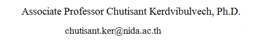
Graduate School of Communication Arts and Management Innovation,
National Institute of Development Administration (NIDA)
118 SeriThai Rd., Klong-chan, Bangkapi, Bangkok 10240, Thailand